B4_flowkit · GPT-6 Astra · attempt 4Jpjcqp
Batch fk1 · job fk1_B_EXP23000279_rep1_230309_flowkit_gpt-6-astra · trial B_EXP23000279_rep1_230309_flowki__4Jpjcqp. Long tool outputs are cut at 6,000 characters.
Score
0.40
0.40
Minutes
11.3
11.3
Agent cost
$4.51
$4.51
Steps
24
24
Screenshots / images
13
13
1
task prompt (instruction.md)
<environment_context> <cwd>/task</cwd> <shell>bash</shell> <current_date>2026-11-10</current_date> <timezone>Etc/UTC</timezone> <filesystem><workspace_roots><root>/task</root></workspace_roots><permission_profile type="disabled"><file_system type="unrestricted" /></permission_profile></filesystem> </environment_context>
2
user message
# Caspase-3/7 assay in WT vs PGRN-KO iPSC-derived neurons: plate acquired 09-Mar-2023
You are the analyst for this experiment: analyse the plate, answer the plan's question, and recommend the next step.
## Inputs (read-only)
| Path | Content |
|---|---|
| `/task/inputs/plan.md` | The scientist's notebook plan for this run: background, objective, materials, procedure, plate maps |
| `/task/inputs/plate_layout.csv` | One row per FCS file: `file, well, sample, genotype, treatment`. Values are the scientist's plate-map wording, from the plan's "Run flow" plate map (first row = A, second row = B) |
| `/task/inputs/raw/` | 18 FCS files (Attune NxT, FCS 3.1, acquired 09-Mar-2023) |
## Environment
- **Budget.** About 5 hours.
## Deliverables (all in `/task/outputs/`)
CSV files must be comma-separated, UTF-8, with a header row. Use the exact file names, column names and allowed values below.
### 1. `gates.xml`
- Your gating strategy as GatingML 2.0, written with `flowkit.export_gatingml` (see *Software*). It must load with `flowkit.parse_gating_xml("/task/outputs/gates.xml")`.
- Every population in `counts.csv` except `all_events` must be a gate in this file with exactly the same name.
- Re-applying the saved gates to the raw files must reproduce the counts in `counts.csv`.
### 2. `counts.csv`
Columns, in order: `file, well, population, role, parent, count, pct_of_parent`
- **One row per file × population**, for all 18 files and the same set of populations in every file.
- **The `all_events` row.** Each file has one row with `population` = `all_events`, `role` = `other`, `parent` = `none`, and `pct_of_parent` empty.
- **`role`** ∈ {`cells`, `singlets`, `live`, `marker_positive`, `other`}.
- `cells`: the main cell population on scatter.
- `singlets`: single cells.
- `live`: viable cells.
- `marker_positive`: the population carrying your primary readout.
- `other`: any other population.
- Each of `cells`, `singlets`, `live` and `marker_positive` must be assigned to exactly one population, the same one in every file.
- **`parent`**: the name of the parent population (`all_events` for the first gate).
- **`count`**: integer event count from FlowKit statistics.
- **`pct_of_parent`**: 100 × count / parent count.
### 3. `flags.csv`
Columns: `file, well, issue_type, evidence, decision`
- One row per file, for all 18 files. Flag any well whose data should not be used, with evidence.
- `issue_type` ∈ {`none`, `clog`, `ran_dry`, `too_few_events`, `saturation`, `bad_control`, `mislabel`, `other`}
- `decision` ∈ {`keep`, `keep_with_note`, `exclude`}
- `evidence` is required unless `issue_type` = `none`. It must cite at least one number measured from the data.
### 4. `condition_summary.csv`
Columns: `condition, wells, n_wells_used, mean, sd, metric_definition, normalisation_applied`
- **One row per condition.** You name the conditions. If you report more than one metric, give each condition–metric pair its own row with a unique `condition` name.
- **`wells`**: the plate wells used, separated by `;` (e.g. `A7;A8`).
- **`n_wells_used`**: integer.
- **`mean`**: number. **`sd`**: number, or empty when `n_wells_used` = 1.
- **`metric_definition`**: the metric in terms of your population names (numerator / denominator).
- **`normalisation_applied`**: `none`, or the exact formula you applied.
### 5. `figure.png`
The main result chart.
### 6. `report.md`
These headings, in this order:
1. `## Question`
2. `## Methods`
3. `## Results`
4. `## Conclusion`
5. `## Caveats`
6. `## Recommendation`
### 7. `answer.json`
```
{
"question": "<the question from the plan>",
"comparisons": [
{"comparison": "<name>", "a": "<condition from condition_summary.csv>", "b": "<condition from condition_summary.csv>",
"direction": "increase|decrease|no_clear_change", "magnitude": "<text with number>", "confidence": "high|medium|low"}
],
"overall_answer": "yes: ... | partial: ... | no: ...",
"assay_verdict": "fit_for_purpose|needs_optimisation|not_fit_for_purpose",
"next_action": "<one ACTION>",
"next_change": {"what": str, "from": str, "to": str, "why": str},
"excluded_wells": ["<wells with decision = exclude in flags.csv>"],
"caveats": ["..."]
}
```
Rules for `answer.json`:
- `comparisons` has at least 1 item. `a` and `b` must exactly match `condition` values in `condition_summary.csv`. `direction` describes b relative to a.
- `overall_answer` starts with `yes:`, `partial:` or `no:`.
- ACTION ∈ {`proceed_as_planned`, `repeat_unchanged`, `repeat_with_change`, `optimise_reagent_or_setting`, `change_treatment_or_timing`, `switch_assay`, `stop`}.
- `next_change`: the change you recommend, as an object: `what` (the step, reagent or condition to change), `from` (its value as run), `to` (the value you recommend) and `why`. Use empty strings if you recommend no change.
- `excluded_wells` must equal the set of wells marked `exclude` in `flags.csv`.
## Software (FlowKit version of this task)
- **Python 3 with FlowKit 1.2.3** (plus flowio, numpy, pandas, scipy, matplotlib, openpyxl) is installed. There is no graphical analysis program.
- **Load** each file with `flowkit.Sample(path)`. Build **one** `flowkit.GatingStrategy` for all wells, with `flowkit.Dimension` and `flowkit.gates.RectangleGate`, `PolygonGate` or `EllipsoidGate` (no quadrant or Boolean gates).
- **Gate names** must be valid XML IDs: letters, digits and underscores, starting with a letter (no spaces or `+`).
- **One gate per reported population**, named exactly as the population and nested under its parent population (the first population's gate sits at the root). A population's events are its own gate within its parent.
- **Compensation.** Your choice. Every gate dimension must state its `compensation_ref` (`"uncompensated"`, `"FCS"` for the file's own spillover matrix, or the id of a matrix you add to the strategy).
- **Channels.** FlowKit gate dimensions use the detector ID (`$PnN`, e.g. `BL1-A`), not the text label.
- **Transforms.** You may draw gates on transformed axes (for example `flowkit.transforms.LogicleTransform`, added with `add_transform` and referenced by `transformation_ref`).
- **Save** the strategy with `flowkit.export_gatingml(strategy, open("/task/outputs/gates.xml", "wb"))` and check that it reloads with `flowkit.parse_gating_xml`.
- **Counts.** `counts.csv` must be the counts these saved gates give on each file (`strategy.gate_sample(sample)`), with no per-well changes.
- **Looking at data.** Save plots as PNG files and open the image files to view them.
---
## How you work
You work in a **terminal** (bash, working directory `/task`).
- **Inputs** are in `/task/inputs/` (read-only). **Write every deliverable to `/task/outputs/`.** Only that folder is collected for grading.
- **Limits.** There is no limit on the number of actions; the only limit is the time budget above. Save `gates.xml` and your output files early and often.
3
agent
I’ll read the plan, inspect the acquisition quality and controls, then apply one gating strategy across all 18 files. I’ll save the gates and counts early and use the results to assess the plan’s question and recommend the next experiment.
tool call · exec
const results = await Promise.allSettled([
tools.exec_command({cmd:"pwd && rg --files -g 'AGENTS.md' -g '*' inputs | head -80","workdir":"/task","max_output_tokens":3000}),
tools.exec_command({cmd:"cat /task/inputs/plan.md","workdir":"/task","max_output_tokens":10000}),
tools.exec_command({cmd:"cat /task/inputs/plate_layout.csv","workdir":"/task","max_output_tokens":5000})
]);
results.forEach((r,i)=>text({i,...r}));
text(ALL_TOOLS.filter(x=>/python|terminal|file|search/i.test(x.name+" "+x.description)).map(x=>({name:x.name,description:x.description.slice(0,140)})).slice(0,60));
tool output
Script completed
Wall time 0.1 seconds
Output:
{"i":0,"status":"fulfilled","value":{"chunk_id":"897729","wall_time_seconds":0.000002544,"exit_code":0,"original_token_count":279,"output":"/task\ninputs/plate_layout.csv\ninputs/plan.md\ninputs/raw/Caspase_WT_KO_optimization_caspase_Group_B4.fcs\ninputs/raw/Caspase_WT_KO_optimization_caspase_Group_B8.fcs\ninputs/raw/Caspase_WT_KO_optimization_caspase_Group_A9.fcs\ninputs/raw/Caspase_WT_KO_optimization_caspase_Group_A2.fcs\ninputs/raw/Caspase_WT_KO_optimization_caspase_Group_A12.fcs\ninputs/raw/Caspase_WT_KO_optimization_caspase_Group_A11.fcs\ninputs/raw/Caspase_WT_KO_optimization_caspase_Group_A10.fcs\ninputs/raw/Caspase_WT_KO_optimization_caspase_Group_B11.fcs\ninputs/raw/Caspase_WT_KO_optimization_caspase_Group_B12.fcs\ninputs/raw/Caspase_WT_KO_optimization_caspase_Group_B9.fcs\ninputs/raw/Caspase_WT_KO_optimization_caspase_Group_B10.fcs\ninputs/raw/Caspase_WT_KO_optimization_caspase_Group_B6.fcs\ninputs/raw/Caspase_WT_KO_optimization_caspase_Group_B2.fcs\ninputs/raw/Caspase_WT_KO_optimization_caspase_Group_B7.fcs\ninputs/raw/Caspase_WT_KO_optimization_caspase_Group_A6.fcs\ninputs/raw/Caspase_WT_KO_optimization_caspase_Group_A7.fcs\ninputs/raw/Caspase_WT_KO_optimization_caspase_Group_A8.fcs\ninputs/raw/Caspase_WT_KO_optimization_caspase_Group_A4.fcs\n"}}
{"i":1,"status":"fulfilled","value":{"chunk_id":"3c9ffb","wall_time_seconds":0.000004456,"exit_code":0,"original_token_count":817,"output":"# EXP23000279 | Caspase Assay in WT and PGRNKO iPSC Derived Neurons\n\nNotebook plan for the run acquired on 2023-03-09. This is the scientist's text as written, up to the start of this run's results.\n\n## DAY 2023-03-09\n\n### Background:\nLoss of function of PGRN has been shown to negatively impact neural cell health reflected by increased cell death and caspase activity.\nCaspases are important mediators of the cell death pathway (apoptosis). Caspases are a group of proteases that result in cleavage of protein substrates subsequently leading to cell disassembly. For the PGRN RNAswap program we will want to measure caspase activity in iPSC derived neurons before and after adding the PGRN RNAswap constructs to ensure that PGRN protein replacement is rescuing the health of neurons. Before testing if AAV-PGRN constructs help restore neural health I will test and optimize the assay on the neurons with no AAV.\n\n### Objective:\nFor first round of experiments will be optimizing the assay. The goal will be to determine if a difference in caspase activity is present in PGRNKOs compared to WT PGP1 neurons. Camptothsesin (topoisomerase inhibitor) will be added.\n\n### Materials:\n- Camptothecin\n- CellEvent Caspase 3/7 reagent\n- DMSO\n- Zombie NIR\n\n### Procedure:\n- Differentiate WT and PGRNKO iPSC into neurons\n- Once cells are sufficiently neuronal can run caspase assay.\n- Add camptothecin Follow plate maps below.\n\n| Dose | for 1 well |\n|---|---|\n| 10uM | 20uL of 250uM stock into 500uL media |\n| 5uM | 10uL of 250uM stock into 500uL media |\n| 2uM | 4uL of 250uM stock into 500uL media |\n| 1uM | 2uL of 250uM stock into 500uL media |\n| DMSO (no treatment controls) | 10uL into 500uL media |\n\n- Incubate with camptothecin for 4.5hrs\n\nWT plate map (as written):\n```\nWT DMSO | WT 5uM camptothecin | WT caspase stain only\nWT no treatment | WT 10uM camptothecin | WT caspase stain only\nWT 1uM camptothecin | WT no stain | WT L/D only\nWT 2uM camptothecin | WT no stain | WT L/D only\n```\n\nKO plate map (as written):\n```\nKO DMSO | KO 5uM camptothecin | KO caspase only\nKO no treatment | KO 10uM camptothecin | KO caspase only\nKO 1uM camptothecin | KO no stain | KO L/D only\nKO 2uM camptothecin | KO no stain | KO L/D only\n```\n\n5. Run flow\n\nFlow plate map (as written; the remaining rows of the table are empty):\n```\nWT no stain | WT no stain | WT caspase only | WT caspase only | WT L/D only | WT L/D only | WT 10uM camptothecin | WT 5uM camptothecin | WT 2uM camptothecin | WT 1uM camptothecin | WT DMSO | WT no treatment\nKO no stain | KO no stain | KO caspase only | KO caspase only | KO L/D only | KO L/D only | KO 10uM camptothecin | KO 5uM camptothecin | KO 2uM camptothecin | KO 1uM camptothecin | KO DMSO | KO no treatment\n```\n\n3. Run CellEvent flow assay\n- Aspirate media and wash with PBS\n- Add 150uL accutase incubate for 5-10min\n- Add 75uL FBS and collect into 96w round bottom plate\n- spin down 200xg for 5min\n- Add 200uL Zombie NIR at 1:500 (4mL PBS+ 8uL Zombie) Incubate for 10min\n- Spin down and remove Zombie stain\n- Add 200uL of Cell Event Caspase 3/7 Detection reagent (1:1000) in flow staining buffer. Incubate for 30min at 37C (4mL +4uL reagent)\n- Analyze the samples without fixing.\n"}}
{"i":2,"status":"fulfilled","value":{"chunk_id":"dd4e66","wall_time_seconds":0.000004047,"exit_code":0,"original_token_count":387,"output":"file,well,sample,genotype,treatment\nCaspase_WT_KO_optimization_caspase_Group_A2.fcs,A2,WT no stain,WT,no stain\nCaspase_WT_KO_optimization_caspase_Group_A4.fcs,A4,WT caspase only,WT,caspase only\nCaspase_WT_KO_optimization_caspase_Group_A6.fcs,A6,WT L/D only,WT,L/D only\nCaspase_WT_KO_optimization_caspase_Group_A7.fcs,A7,WT 10uM camptothecin,WT,10uM camptothecin\nCaspase_WT_KO_optimization_caspase_Group_A8.fcs,A8,WT 5uM camptothecin,WT,5uM camptothecin\nCaspase_WT_KO_optimization_caspase_Group_A9.fcs,A9,WT 2uM camptothecin,WT,2uM camptothecin\nCaspase_WT_KO_optimization_caspase_Group_A10.fcs,A10,WT 1uM camptothecin,WT,1uM camptothecin\nCaspase_WT_KO_optimization_caspase_Group_A11.fcs,A11,WT DMSO,WT,DMSO\nCaspase_WT_KO_optimization_caspase_Group_A12.fcs,A12,WT no treatment,WT,no treatment\nCaspase_WT_KO_optimization_caspase_Group_B2.fcs,B2,KO no stain,KO,no stain\nCaspase_WT_KO_optimization_caspase_Group_B4.fcs,B4,KO caspase only,KO,caspase only\nCaspase_WT_KO_optimization_caspase_Group_B6.fcs,B6,KO L/D only,KO,L/D only\nCaspase_WT_KO_opti
… [1,447 more characters not shown]tool call · exec
const results = await Promise.allSettled([
tools.exec_command({cmd:"ls -la /task /task/outputs /AGENTS.md /task/AGENTS.md /task/inputs/AGENTS.md","max_output_tokens":3000}),
tools.exec_command({cmd:"python - <<'PY'\nimport flowkit as fk, inspect\nprint('FlowKit', fk.__version__)\nprint('Sample', inspect.signature(fk.Sample))\nprint('Dimension', inspect.signature(fk.Dimension))\nprint('Rectangle',inspect.signature(fk.gates.RectangleGate))\nprint('Polygon',inspect.signature(fk.gates.PolygonGate))\nprint('add_gate',inspect.signature(fk.GatingStrategy.add_gate))\nprint('gate_sample',inspect.signature(fk.GatingStrategy.gate_sample))\ns=fk.Sample('/task/inputs/raw/Caspase_WT_KO_optimization_caspase_Group_A2.fcs')\nprint(s)\nprint(s.channels.to_string(index=False))\nprint('METADATA',s.metadata)\nprint('get_events',inspect.signature(s.get_events))\nPY","max_output_tokens":8000})
]);
results.forEach((r,i)=>text({i,...r}));
tool output
Script completed
Wall time 3.2 seconds
Output:
{"i":0,"status":"fulfilled","value":{"chunk_id":"076180","wall_time_seconds":0.000004452,"exit_code":2,"original_token_count":127,"output":"ls: cannot access '/AGENTS.md': No such file or directory\nls: cannot access '/task/AGENTS.md': No such file or directory\nls: cannot access '/task/inputs/AGENTS.md': No such file or directory\n/task:\ntotal 16\ndrwxr-xr-x 4 root root 4096 Nov 10 17:01 .\ndrwxr-xr-x 21 root root 4096 Nov 10 17:08 ..\ndr-xr-xr-x 3 root root 4096 Nov 10 16:58 inputs\ndrwxr-xr-x 2 root root 4096 Nov 10 17:01 outputs\n\n/task/outputs:\ntotal 8\ndrwxr-xr-x 2 root root 4096 Nov 10 17:01 .\ndrwxr-xr-x 4 root root 4096 Nov 10 17:01 ..\n"}}
{"i":1,"status":"fulfilled","value":{"chunk_id":"2a9e15","wall_time_seconds":3.034697243,"exit_code":0,"original_token_count":1009,"output":"FlowKit 1.2.3\nSample (fcs_path_or_data, sample_id=None, filename_as_id=False, channel_labels=None, compensation=None, null_channel_list=None, ignore_offset_error=False, ignore_offset_discrepancy=False, use_header_offsets=False, cache_original_events=False, subsample=10000)\nDimension (dimension_id, compensation_ref='uncompensated', transformation_ref=None, range_min=None, range_max=None)\nRectangle (gate_name, dimensions, use_complement=False)\nPolygon (gate_name, dimensions, vertices, use_complement=False)\nadd_gate (self, gate, gate_path, sample_id=None)\ngate_sample (self, sample, cache_events=False, verbose=False)\nSample(v3.1, A2.fcs, 9 channels, 365736 events)\n channel_number pnn pns png pne pnr\n 1 Time Time 1.0 (0.0, 0.0) 67108864.0\n 2 FSC-A FSC-A 1.0 (0.0, 0.0) 1048576.0\n 3 SSC-A SSC-A 1.0 (0.0, 0.0) 1048576.0\n 4 BL1-A AAV-GFP-Caspase-A 1.0 (0.0, 0.0) 1048576.0\n 5 RL3-A LiveDead-Zombie NIR-A 1.0 (0.0, 0.0) 1048576.0\n 6 FSC-H FSC-H 1.0 (0.0, 0.0) 1048576.0\n 7 SSC-H SSC-H 1.0 (0.0, 0.0) 1048576.0\n 8 FSC-W FSC-W 1.0 (0.0, 0.0) 1024.0\n 9 SSC-W SSC-W 1.0 (0.0, 0.0) 1024.0\nMETADATA {'par': '9', 'tot': '365736', 'mode': 'L', 'datatype': 'F', 'byteord': '1,2,3,4', 'p1f': 'NA', 'p1l': 'NA', 'p1s': 'Time', 'p1v': 'NA', 'p1n': 'Time', 'p1b': '32', 'p1r': '67108864', 'p1e': '0,0', 'p2f': 'NA', 'p2l': '488', 'p2s': 'FSC-A', 'p2v': '30', 'p2n': 'FSC-A', 'p2b': '32', 'p2r': '1048576', 'p2e': '0,0', 'p3f': 'NA', 'p3l': '488', 'p3s': 'SSC-A', 'p3v': '300', 'p3n': 'SSC-A', 'p3b': '32', 'p3r': '1048576', 'p3e': '0,0', 'p4f': 'NA', 'p4l': '488', 'p4s': 'AAV-GFP-Caspase-A', 'p4v': '250', 'p4n': 'BL1-A', 'p4b': '32', 'p4r': '1048576', 'p4e': '0,0', 'p5f': 'NA', 'p5l': '640', 'p5s': 'LiveDead-Zombie NIR-A', 'p5v': '300', 'p5n': 'RL3-A', 'p5b': '32', 'p5r': '1048576', 'p5e': '0,0', 'p6f': 'NA', 'p6l': '488', 'p6s': 'FSC-H', 'p6v': '30', 'p6n': 'FSC-H', 'p6b': '32', 'p6r': '1048576', 'p6e': '0,0', 'p7f': 'NA', 'p7l': '488', 'p7s': 'SSC-H', 'p7v': '300', 'p7n': 'SSC-H', 'p7b': '32', 'p7r': '1048576', 'p7e': '0,0', 'p8f': 'NA', 'p8l': '488', 'p8s': 'FSC-W', 'p8v': '30', 'p8n': 'FSC-W', 'p8b': '32', 'p8r': '1024', 'p8e': '0,0', 'p9f': 'NA', 'p9l': '488', 'p9s': 'SSC-W', 'p9v': '300', 'p9n': 'SSC-W', 'p9b': '32', 'p9r': '1024', 'p9e': '0,0', 'cyt': '0A29009 Attune NxT Acoustic Focusing Cytometer (Lasers: BRV6Y)', 'sys': 'SEA11065ATTUNE Microsoft Windows 10 Enterprise LTSC', 'spillover': '2,BL1-A,RL3-A,1.000000,0.000000,0.000000,1.000000', 'btim': '15:13:25', 'cells': 'NA', 'com': 'NA', 'cytsn': '2AFC228071019', 'date': '09-Mar-2023', 'etim': '15:14:13', 'exp': 'NA', 'fil': 'A2.fcs', 'inst': 'NA', 'originality': 'Original', 'lost': '0', 'op': 'Jeff Huang', 'plateid': 'NA', 'platename': 'Caspase_WT_KO_optimization', 'proj': 'caspase', 'smno': 'Group', 'src': 'NA', 'timestep': '0.001', 'vol': '157000', 'wellid': 'A2', '#coincidentcount': '32822', '#flowrate': '200', '#laser1asf': '1.05', '#laser1color': 'Blue', '#laser1delay': '1100', '#laser2asf': '1.09', '#laser2color': 'Red', '#laser2delay': '1497', '#laser3asf': '0.89', '#laser3color': 'Violet', '#laser3delay': '717', '#laser4asf': '0.99', '#laser4color': 'Yellow', '#laser4delay': '304', '#laserconfig': 'BRV6Y', '#p1label': 'NA', '#p1target': 'NA', '#p4label': 'Caspase', '#p4target': 'AAV-GFP', '#p5label': 'Zombie NIR', '#p5target': 'LiveDead', '#ptdate': '09-Mar-2023', '#ptresult': 'Pass', '#tr1': 'OR_FSC,25000', '#widththreshold': '1000', '#winext': '0', 'hostid': 'SEA11065ATTUNE', 'begindata': '000000008192', 'enddata': '000013174687', 'nextdata': '000000000000', 'beginstext': '000000000000', 'endstext': '000000000000', 'beginanalysis': '000000000000', 'endanalysis': '000000000000'}\nget_events (source='xform', subsample=False, event_mask=None)\n"}}tool call · exec
text(await tools.apply_patch("*** Begin Patch\n*** Add File: /task/outputs/inspect_plate.py\n+\"\"\"Read-only exploratory QC for EXP23000279; writes only to outputs/.\"\"\"\n+from pathlib import Path\n+import json\n+import numpy as np\n+import pandas as pd\n+import matplotlib\n+matplotlib.use('Agg')\n+import matplotlib.pyplot as plt\n+from matplotlib.colors import LogNorm\n+import flowkit as fk\n+\n+ROOT = Path('/task')\n+OUT = ROOT/'outputs'\n+layout = pd.read_csv(ROOT/'inputs/plate_layout.csv')\n+channels = ['Time','FSC-A','SSC-A','BL1-A','RL3-A','FSC-H','SSC-H','FSC-W','SSC-W']\n+rng = np.random.default_rng(20230309)\n+figs = {}\n+for name in ['scatter','singlets','fluorescence','time','histograms']:\n+ fig, axs = plt.subplots(3,6,figsize=(22,11),constrained_layout=True)\n+ figs[name] = (fig,axs.ravel())\n+summary=[]\n+quantiles=[]\n+metadata={}\n+for k,row in layout.iterrows():\n+ s=fk.Sample(str(ROOT/'inputs/raw'/row.file))\n+ x=s.get_events(source='raw')\n+ idx={c:s.get_channel_index(c) for c in channels}\n+ metadata[row.well]=s.metadata\n+ sel=rng.choice(len(x),min(20000,len(x)),replace=False)\n+ p=x[sel]\n+ for c in channels:\n+ q=np.quantile(x[:,idx[c]],[0,.001,.01,.1,.5,.9,.99,.999,1])\n+ quantiles.append(dict(well=row.well,channel=c,**dict(zip(['min','q001','q01','q10','median','q90','q99','q999','max'],q))))\n+ t=x[:,idx['Time']]\n+ bins=np.arange(np.floor(t.min()),np.ceil(t.max())+1.001,1)\n+ n,_=np.histogram(t,bins=bins)\n+ ssum=dict(well=row.well,n=len(x),tmin=t.min(),tmax=t.max(),span=t.max()-t.min(),rate_median=np.median(n),rate_min=n.min(),rate_max=n.max(),time_decreases=int(np.sum(np.diff(t)<0)),btim=s.metadata['btim'],etim=s.metadata['etim'],volume=s.metadata.get('vol'),coincident=s.metadata.get('#coincidentcount'))\n+ for c in ['FSC-A','SSC-A','FSC-H','BL1-A','RL3-A']:\n+ r=float(s.channels.loc[s.channels.pnn==c,'pnr'].iloc[0])\n+ ssum[c+'_sat_pct']=100*np.mean(x[:,idx[c]]>=r-1)\n+ summary.append(ssum)\n+ ax=figs['scatter'][1][k]\n+ ax.hist2d(np.log10(np.maximum(p[:,idx['FSC-A']],1)),np.log10(np.maximum(p[:,idx['SSC-A']],1)),bins=100,range=((4,6.1),(1,6.1)),norm=LogNorm())\n+ ax.set(xlabel='log10 FSC-A',ylabel='log10 SSC-A')\n+ ax=figs['singlets'][1][k]\n+ ax.hist2d(np.log10(np.maximum(p[:,idx['FSC-A']],1)),np.log10(np.maximum(p[:,idx['FSC-H']],1)),bins=100,range=((4,6.1),(3,6.1)),norm=LogNorm())\n+ ax.set(xlabel='log10 FSC-A',ylabel='log10 FSC-H')\n+ ax=figs['fluorescence'][1][k]\n+ ax.hist2d(np.arcsinh(p[:,idx['BL1-A']]/150),np.arcsinh(p[:,idx['RL3-A']]/150),bins=100,range=((-2,10),(-2,10)),norm=LogNorm())\n+ ax.set(xlabel='asinh(BL1-A / 150)',ylabel='asinh(RL3-A / 150)')\n+ ax=figs['time'][1][k]\n+ ax.step((bins[1:]+bins[:-1])/2,n,where='mid',color='black',lw=1)\n+ ax.set(xlabel='Time (s)',ylabel='Events / s')\n+ twin=ax.twinx()\n+ ti=np.searchsorted(bins,t,side='right')-1\n+ med=np.array([np.median(x[ti==j,idx['FSC-A']]) if np.any(ti==j) else np.nan for j in range(len(n))])\n+ twin.plot((bins[1:]+bins[:-1])/2,med/1000,color='tab:orange',lw=1)\n+ twin.set_ylabel('Median FSC-A (×1000)',color='tab:orange')\n+ ax=figs['histograms'][1][k]\n+ for c,col in [('BL1-A','tab:green'),('RL3-A','tab:purple')]:\n+ ax.hist(np.arcsinh(x[:,idx[c]]/150),bins=np.linspace(-2,10,121),histtype='step',density=True,label=c,color=col)\n+ ax.set(xlabel='asinh(fluorescence / 150)',ylabel='Density',xlim=(-2,10))\n+ if k==0: ax.legend(fontsize=8)\n+ for _,axs in figs.values():\n+ axs[k].set_title(f'{row.well}: {row.sample}\\nn={len(x):,}',fontsize=10)\n+ print(row.well,len(x),'time',t.min(),t.max(),flush=True)\n+for name,(fig,axs) in figs.items():\n+ fig.savefig(OUT/f'exploratory_{name}.png',dpi=135)\n+ plt.close(fig)\n+pd.DataFrame(summary).to_csv(OUT/'acquisition_qc.csv',index=False)\n+pd.DataFrame(quantiles).to_csv(OUT/'channel_quantiles.csv',index=False)\n+(OUT/'fcs_metadata.json').write_text(json.dumps(metadata,indent=2))\n+print(pd.DataFrame(summary).to_string(index=False))\n*** End Patch"));
text(await tools.exec_command({cmd:"python /task/outputs/inspect_plate.py","yield_time_ms":1000,"max_output_tokens":3000}));
tool output
Script completed
Wall time 1.2 seconds
Output:
{}
{"chunk_id":"3d7823","wall_time_seconds":1.00145435,"session_id":96079,"original_token_count":0,"output":""}tool call · exec
const results = await Promise.allSettled([
tools.web__run({search_query:[{q:'site.thermofisher.com CellEvent Caspase-3/7 Green Flow Cytometry assay 1 mM 500 nM C10427 30 minutes'},{q:'site.biolegend.com Zombie NIR 1:500 staining 10 minutes protocol'}],response_length:"long"}),
tools.exec_command({cmd:"python - <<'PY'\nimport inspect,flowkit as fk\nfrom flowkit._models import gating_results\nprint(inspect.signature(fk.transforms.LogicleTransform))\nprint(inspect.signature(fk.transforms.LogTransform))\nprint(inspect.getsource(fk.Sample._get_raw_events))\nprint(inspect.getsource(gating_results.GatingResults.get_gate_count))\nprint(inspect.getsource(gating_results.GatingResults.get_gate_relative_percent))\nPY","max_output_tokens":5000}),
tools.write_stdin({session_id:96079,chars:"","yield_time_ms":1000,"max_output_tokens":3000})
]);results.forEach((r,i)=>text({i,...r}));
tool output
Script completed
Wall time 5.0 seconds
Output:
{"i":0,"status":"fulfilled","value":"CellEvent Caspase-3/7 Green Flow Cytometry Assay Kit User Guide (Pub.No. MAN0007522 B.0) (https://documents.thermofisher.com/TFS-Assets/LSG/manuals/cellevent_caspase_3_7_grn_flow_cytometry_assay_kit_man.pdf)\nciteturn0search12 [wordlim: 200] Published: 4.3 years ago; **Stain cells with CellEvent™ Caspase-3/7 Green Flow Cytometry Assay Kit (continued)** ... ** During the final 5 minutes of staining, add 1 µL of the 1 mM SYTOX™ AADvanced™ Dead Cell Stain in DMSO to the appropriate samples and mix gently. ... ** Analyze the samples without washing or fixing, using 488-nm excitation and collecting fluorescence emission using a 530/30 bandpass filter or equivalent for CellEvent™ Caspase-3/7 Green Detection Reagent and a 690/50 bandpass filter or equivalent for SYTOX™ AADvanced™ Dead Cell Stain. ... <td>C10427</td>\n1. **Stain cells with CellEvent™ Caspase-3/7 Green Flow Cytometry Assay Kit (continued)**\n\n **1.1.** *(Optional)* Induce apoptosis in cells using the desired method. Prepare a negative control by incubating cells in the absence of apoptosis inducing agent.\n\n **1.2.** Harvest the cell sample(s). Adjust the cell concentration of the sample(s) between 1 × 10^5 cells/mL and 1 × 10^7 cells/mL using the appropriate buffer such as 1X PBS (Cat. No. 10010) ± 2% BSA, or complete growth medium (e.g., RPMI, Cat. No. 22400; DMEM, Cat. No. 11995).\n\n **1.3.** Before using the SYTOX™ AADvanced™ Dead Cell Stain for the first time, prepare a 1 mM solution. \n a. Remove the vial containing the SYTOX™ AADvanced™ Dead Cell Stain (Component B) and the vial of DMSO (Component C) from the freezer and allow the contents to equilibrate to room temperature. \n b. Add 100 µL of DMSO to the vial of SYTOX™ AADvanced™ Dead Cell Stain and mix well.\n\n **1.4.** Prepare flow cytometry tubes each containing 1 mL of cell suspension. We recommend that you prepare and acquire single stained compensation controls using the CellEvent™ Caspase-3/7 Green Detection Reagent and the SYTOX™ AADvanced™ Dead Cell Stain.\n\n **1.5.** Add 1 µL of CellEvent™ Caspase-3/7 Green Detection Reagent to 1 mL of sample and mix gently. Incubate the samples for 30 minutes at 37°C or 45–60 minutes at room temperature, protected from light. The final concentration of the reagent is 500 nM. \n **Note:** For other cell types and models, stain concentration and labeling duration may require adjustment. For optimization, we recommend testing final concentrations between 400–1,000 nM.\n\n **1.6.** During the final 5 minutes of staining, add 1 µL of the 1 mM SYTOX™ AADvanced™ Dead Cell Stain in DMSO to the appropriate samples and mix gently. The final labeling concentration of stain is 1 µM.\n\n **1.7.** Analyze the samples without washing or fixing, using 488-nm excitation and collecting fluorescence emission using a 530/30 bandpass filter or equivalent for CellEvent™ Caspase-3/7 Green Detection Reagent and a 690/50 bandpass filter or equivalent for SYTOX™ AADvanced™ Dead Cell Stain. \n--------------------------------------------------------------------------------\nUSER GUIDE\nCellEvent™ Caspase-3/7 Green Flow Cytom (https://www.thermofisher.com/TFS-Assets/LSG/manuals/cellevent_caspase_3_7_grn_flow_cytometry_assay_kit_man.pdf)\nciteturn0search13 [wordlim: 200] Published: 8 months ago; C10427 | Cat. ... Component CellEvent™ Caspase-3/7 Green Detection Reagent (Component A) | Amount 100 tests | 20 tests | Concentration 500 µM | Storage[1] ≤–20°C Desiccate Store vial upright Protect from light ... C10740) based on the protocol “Stain cells with CellEvent™ Caspase-3/7 Green Flow Cytometry Assay Kit” on page 2.\nFigure 2 Spectra for the CellEvent™ Caspase-3/7 Green Flow Cytometry Assay Kit.\nFluorescence excitation and emission spectra of the (A) CellEvent\n™ Caspase-3/7 Green Detection Reagent following cleavage of the DEVD peptide\nsequence and (B) SYTOX\n™ AADvanced\n™ Dead Cell Stain, bound to DNA.\nContents and storage\nComponent None | Amount Cat. No. C10427 | Cat. No. C10740 | Concentration None | Storage[1] None\n--- | --- | --- | --- | ---\nComponent CellEvent™ Caspase-3/7 Green Detection Reagent (Component A) | Amount 100 tests | 20 tests | Concentration 500 µM | Storage[1] ≤–20°C Desiccate Store vial upright Protect from light\nComponent SYTOX™ AADvanced™ Dead Cell Stain (Component B) | Amount 100 tests | 20 tests | Concentration 1 mM[2] | Storage[1] None\nComponent Dimethylsulfoxide (DMSO) (Component C) | Amount 200 µL | 200 µL | Concentration Not applicable | Storage[1] None\nComponent Number of reactions: Sufficient material is supplied for 100 reactions (Cat. No. C10427) or 20 reactions (Cat. No. C10740) based on the protocol “Stain cells with CellEvent™ Caspase-3/7 Green Flow Cytometry Assay Kit” on page 2. | Amount None | | Concentration None | Storage[1] None\nComponent Approximate fluorescence excitation and emission maxima (bound to DNA): CellEvent™ Caspase-3/7 Green Detection Reagent = approximately 511/533 nm; SYTOX™ AADvanced™ Dead Cell Stain = 546/647 nm (see Figure 2). | Amount None | | Concentration None | Storage[1] None\n[1] When stored as directed, kit components are stable for at least 1 year.\n[2] When reconstituted with DMSO. Before refreezing, tightly seal the vial.\nBefore you begin\nRequired materials not supplied\n• Cells of interest in single-cell suspension (appropriate sample concentrations range from 1 × 105 to 1 × 107 cells/mL)\n• Appropriate suspension buffer (e.g., phosphate buffered saline, complete media, etc.)\n• (Optional) Inducing agent appropriate for the cell model used (e.g., camptothecin, staurosporine)\n• (Optional) Control sample (no treatment)\nLabel cells for flow cytometry\n1\nStain cells with\nCellEvent™ Caspase-3/7\nGreen Flow Cytometry\nAssay Kit\nThe following procedure was developed using the Jurkat T-cell leukemia cell line but can be adapted\nfor any cell type. Grow
… [24,799 more characters not shown]7
agent
The files match the supplied plate map and contain about 366,000–612,000 events per well. The recorded spillover matrices are identity matrices. I’ll check the unstained and single-stain controls before setting the fluorescence thresholds, and inspect scatter and event rates for acquisition problems.
tool call · exec
text(await tools.write_stdin({session_id:96079,chars:"","yield_time_ms":1000,"max_output_tokens":5000}));
const paths=["/task/outputs/exploratory_scatter.png","/task/outputs/exploratory_singlets.png","/task/outputs/exploratory_fluorescence.png","/task/outputs/exploratory_time.png"];
for(const path of paths){const r=await tools.view_image({path});image(r.image_url);}
tool output
Script completed Wall time 3.9 seconds Output:
{"chunk_id":"8d059b","wall_time_seconds":3.741395445,"exit_code":0,"original_token_count":912,"output":"well n tmin tmax span rate_median rate_min rate_max time_decreases btim etim volume coincident FSC-A_sat_pct SSC-A_sat_pct FSC-H_sat_pct BL1-A_sat_pct RL3-A_sat_pct\n A2 365736 0.014 47.015 47.001 7922.0 0 8559 0 15:13:25 15:14:13 157000 32822 1.269222 1.602249 0.0 0.000000 0.000000\n A4 440820 0.014 47.094 47.080 9481.0 0 10043 0 15:14:40 15:15:28 158000 41140 0.693027 0.964112 0.0 0.000000 0.000000\n A6 412724 0.014 46.075 46.061 9084.5 0 9741 0 15:15:56 15:16:43 154000 38046 0.775094 1.144591 0.0 0.000000 0.001938\n A7 395514 0.014 47.051 47.037 8509.0 0 9212 0 15:17:10 15:17:58 157000 31260 0.339305 0.586831 0.0 0.000253 0.000253\n A8 384992 0.014 46.891 46.877 8471.5 0 12591 1 15:18:26 15:19:13 157000 28906 0.489101 0.797679 0.0 0.001299 0.001299\n A9 428254 0.014 47.195 47.181 9106.0 0 10328 0 15:19:41 15:20:28 158000 39310 0.597309 0.869577 0.0 0.000234 0.001635\n A10 552590 0.014 47.171 47.157 11780.0 0 13883 0 15:20:56 15:21:44 158000 69063 1.266219 1.783782 0.0 0.005429 0.000724\n A11 377220 0.014 47.085 47.071 8118.0 0 8473 0 15:22:11 15:22:59 157000 28444 0.352314 0.595143 0.0 0.000000 0.000000\n A12 409074 0.113 46.926 46.813 12400.0 0 22923 0 15:23:26 15:24:14 157000 57692 1.422725 2.026284 0.0 0.000244 0.000978\n B2 392795 0.014 47.077 47.063 8355.0 0 8910 0 15:24:41 15:25:29 157000 26007 0.038697 0.449089 0.0 0.000000 0.000000\n B4 605670 0.014 47.088 47.074 13099.0 0 13619 0 15:25:56 15:26:44 157000 61934 0.043588 0.543861 0.0 0.000000 0.000000\n B6 457465 0.013 47.039 47.026 9872.0 0 10556 0 15:27:12 15:28:00 157000 36300 0.091155 0.432383 0.0 0.000000 0.000656\n B7 612174 0.014 47.100 47.086 12946.0 0 14304 0 15:28:27 15:29:15 158000 65284 0.102095 0.614041 0.0 0.000000 0.004574\n B8 493435 0.014 46.105 46.091 10800.0 0 15521 1 15:29:44 15:30:30 155000 41719 0.089171 0.676280 0.0 0.000000 0.003851\n B9 425772 0.014 47.033 47.019 9317.0 0 9932 0 15:30:58 15:31:46 157000 28737 0.060596 0.350892 0.0 0.000000 0.002349\n B10 539106 0.014 47.060 47.046 11537.0 0 12446 0 15:32:13 15:33:01 157000 47200 0.080318 0.528467 0.0 0.000000 0.000742\n B11 561171 0.014 46.098 46.084 12407.0 0 13143 0 15:33:29 15:34:16 155000 55299 0.094445 0.552773 0.0 0.000000 0.000178\n B12 538223 0.014 47.205 47.191 11426.0 0 12807 0 15:34:44 15:35:32 158000 51104 0.135074 0.750618 0.0 0.000000 0.000000\n"}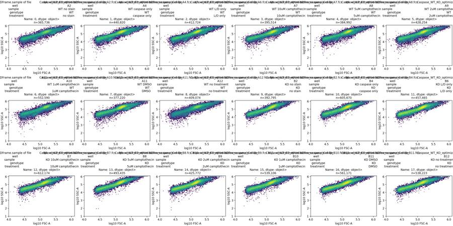
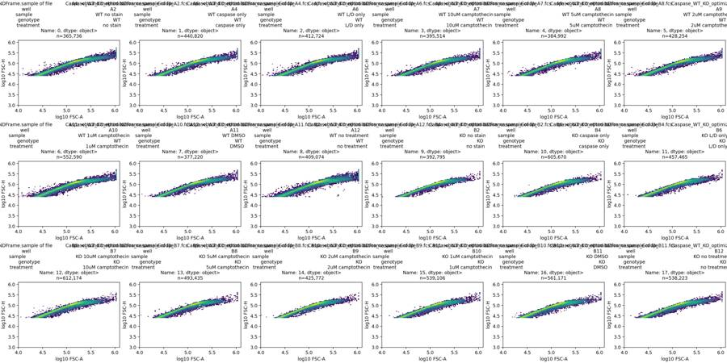
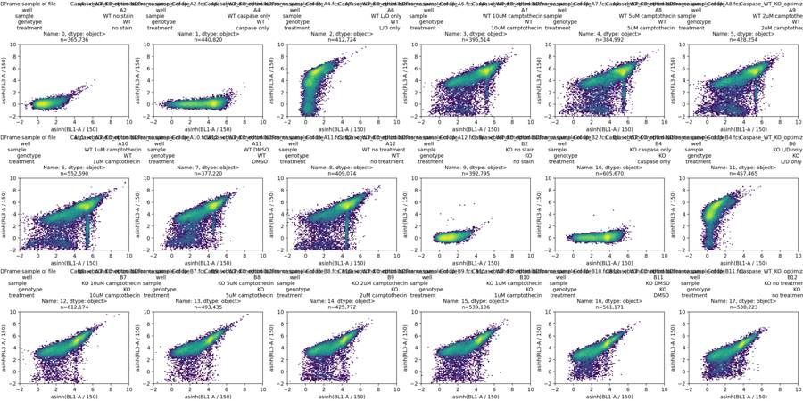
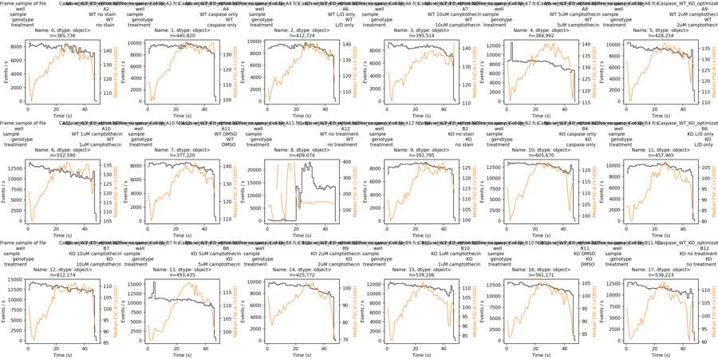
tool call · exec
text(await tools.apply_patch("*** Begin Patch\n*** Update File: /task/outputs/inspect_plate.py\n@@\n- axs[k].set_title(f'{row.well}: {row.sample}\\nn={len(x):,}',fontsize=10)\n+ axs[k].set_title(f'{row.well}: {row[\"sample\"]}\\nn={len(x):,}',fontsize=10)\n*** End Patch"));
const results=await Promise.allSettled([
tools.exec_command({cmd:"python /task/outputs/inspect_plate.py","yield_time_ms":1000,"max_output_tokens":1000}),
tools.exec_command({cmd:"python - <<'PY'\nimport pandas as pd\nq=pd.read_csv('/task/outputs/channel_quantiles.csv')\nprint(q[q.channel.isin(['FSC-A','SSC-A','FSC-H','FSC-W','SSC-W','BL1-A','RL3-A'])].to_string(index=False))\nPY","max_output_tokens":10000})
]);results.forEach((r,i)=>text({i,...r}));
tool output
Script completed
Wall time 1.2 seconds
Output:
{}
{"i":0,"status":"fulfilled","value":{"chunk_id":"08134e","wall_time_seconds":1.00122954,"session_id":26579,"original_token_count":0,"output":""}}
{"i":1,"status":"fulfilled","value":{"chunk_id":"53d552","wall_time_seconds":0.217020273,"exit_code":0,"original_token_count":3207,"output":"well channel min q001 q01 q10 median q90 q99 q999 max\n A2 FSC-A -65536.0 15176.205 23420.70 32587.0 131228.0 355843.0 1048575.00 1048575.000 1048575.0\n A2 SSC-A -65536.0 -22371.585 4571.40 20743.0 116839.0 370609.5 1048575.00 1048575.000 1048575.0\n A2 BL1-A -6274.0 -161.000 -58.00 4.0 111.0 489.0 1755.00 9404.985 145927.0\n A2 RL3-A -863.0 -155.000 -106.00 -49.0 17.0 96.0 235.00 1069.265 15203.0\n A2 FSC-H 25086.0 25283.000 25831.00 32670.0 109721.5 171218.5 307825.25 447143.325 584362.0\n A2 FSC-W 17.0 31.000 39.00 57.0 84.0 142.0 276.00 375.000 375.0\n A2 SSC-W 0.0 12.000 31.00 50.0 84.0 139.0 273.00 375.000 375.0\n A4 FSC-A -65536.0 18091.552 23668.19 32858.9 126702.0 310465.0 899568.59 1048575.000 1048575.0\n A4 SSC-A -65536.0 -2421.000 5602.00 20257.0 112912.0 342575.1 1029521.27 1048575.000 1048575.0\n A4 BL1-A -12744.0 -162.181 -32.00 231.0 3658.0 12583.0 29645.00 65130.801 901146.0\n A4 RL3-A -689.0 -154.000 -105.00 -49.0 17.0 93.0 200.00 526.000 31223.0\n A4 FSC-H 25074.0 25288.819 25879.00 32923.0 105739.5 159908.2 253407.67 417678.127 577040.0\n A4 FSC-W 17.0 33.000 40.00 57.0 84.0 137.0 254.00 373.000 375.0\n A4 SSC-W 0.0 17.000 32.00 49.0 83.0 134.0 252.00 365.000 375.0\n A6 FSC-A -26273.0 17556.507 23548.00 32258.0 128331.0 305761.5 939099.35 1048575.000 1048575.0\n A6 SSC-A -65536.0 -3103.662 5781.46 20870.0 116932.0 356073.5 1048575.00 1048575.000 1048575.0\n A6 BL1-A -1874.0 -86.000 -43.00 21.0 153.0 539.0 1577.00 5218.878 85205.0\n A6 RL3-A -21671.0 -796.000 -334.00 50.0 7664.0 28795.0 69579.01 165974.179 1048575.0\n A6 FSC-H 25086.0 25286.000 25823.00 32419.0 107458.0 158867.4 256995.11 423229.184 530668.0\n A6 FSC-W 19.0 32.000 40.00 56.0 84.0 136.0 255.00 375.000 375.0\n A6 SSC-W 0.0 17.000 32.00 49.0 83.0 134.0 253.00 368.000 375.0\n A7 FSC-A -65536.0 20196.513 24004.13 33201.0 130214.5 275534.5 700411.16 1048575.000 1048575.0\n A7 SSC-A -65536.0 595.000 7698.26 23935.0 117333.0 324730.7 838568.74 1048575.000 1048575.0\n A7 BL1-A -12562.0 -177.000 -8.00 340.0 7119.0 21295.0 46617.48 99043.426 1048575.0\n A7 RL3-A -26439.0 -666.487 -312.00 348.0 10337.0 31934.0 72547.22 167315.946 1048575.0\n A7 FSC-H 25068.0 25288.513 25881.13 33253.0 107366.0 151885.0 209163.92 371724.024 537848.0\n A7 FSC-W 19.0 35.000 42.00 58.0 84.0 128.0 228.00 357.000 375.0\n A7 SSC-W 0.0 22.000 35.00 52.0 84.0 126.0 226.00 357.000 375.0\n A8 FSC-A -24849.0 19601.964 24049.91 33573.1 131300.5 275595.7 761878.06 1048575.000 1048575.0\n A8 SSC-A -65536.0 -307.180 6699.82 22510.0 117828.0 325415.9 924226.40 1048575.000 1048575.0\n A8 BL1-A -25114.0 -242.000 -26.00 401.0 8610.0 26727.0 59376.45 137897.878 1048575.0\n A8 RL3-A -62295.0 -660.000 -312.00 85.0 8865.0 29038.0 65073.45 151394.313 1048575.0\n A8 FSC-H 25055.0 25288.000 25923.00 33539.0 108814.0 152918.9 228090.34 400574.171 513133.0\n A8 FSC-W 20.0 34.000 42.00 58.0 84.0 127.0 230.00 363.000 375.0\n A8 SSC-W 0.0 21.000 34.00 52.0 84.0 125.0 228.00 361.000 375.0\n A9 FSC-A -65536.0 18694.253 23722.00 32499.0 128784.0 293721.1 834412.58 1048575.000 1048575.0\n A9 SSC-A -65536.0 -2046.494 5261.06 21151.0 111144.5 331283.7 976186.84 1048575.000 1048575.0\n A9 BL1-A -7412.0 -224.000 -41.00 330.0 6071.0 22190.0 51883.82 121587.205 1048575.0\n A9 RL3-A -40570.0 -884.747 -384.00 -19.0 7697.0 29594.0 69379.94 165734.362 1048575.0\n A9 FSC-H 25056.0 25288.000 25855.53 32663.0 107379.0 156457.0 234700.70 411616.386 523924.0\n A9 FSC-W 19.0 33.000 41.00 57.0 84.0 133.0 247.00 369.000 375.0\n A9 SSC-W 0.0 17.000 32.00 49.0 83.0 131.0 245.00 364.000 375.0\n A10 FSC-A -65536.0 10524.835 22892.89 33058.0 126671.5 331498.2 1048575.00 1048575.000 1048575.0\n A10 SSC-A -65536.0 -22633.864 4004.00 19950.0 117999.5 396068.0 1048575.00 1048575.000 1048575.0\n A10 BL1-A -50195.0 -914.055 -156.00 289.0 7427.0 26220.1 68614.33 184051.394 1048575.0\n A10 RL3-A -41884.0 -1517.822 -425.00 -12.0 6223.0 25300.0 66219.88 167666.592 1048575.0\n A10 FSC-H 25061.0 25287.000 25875.00 32987.0 104837.0 157140.1 287649.08 437248.550 622983.0\n A10 FSC-W 17.0 29.000 38.00 55.0 84.0 149.0 302.00 375.000 375.0\n A10 SSC-W 0.0 10.000 30.00 47.0 83.0 148.0 300.00 375.000 375.0\n A11 FSC-A -4265.0 20492.219 23922.00 32462.0 130591.5 293368.3 731528.79 1048575.000 1048575.0\n A11 SSC-A -65536.0 336.095 6144.00 22594.9 118697.5 331412.0 853092.06 1048575.000 1048575.0\n A11 BL1-A -958.0 -109.000 -12.00 233.9 3698.0 12163.1 26276.05 54795.422 421829.0\n A11 RL3-A -5642.0 -497.000 -258.00 107.0 7474.0 26270.0 58222.43 123677.910 787036.0\n A11 FSC-H 25095.0 25288.000 25860.19 32634.0 108478.0 158257.1 224777.48 379877.087 554545.0\n A11 FSC-W 23.0 36.000 42.00 58.0
… [7,295 more characters not shown]tool call · exec
text(await tools.apply_patch("*** Begin Patch\n*** Add File: /task/outputs/explore_gates.py\n+\"\"\"Explore common scatter/singlet gates and control fluorescence.\"\"\"\n+from pathlib import Path\n+import numpy as np\n+import pandas as pd\n+import matplotlib\n+matplotlib.use('Agg')\n+import matplotlib.pyplot as plt\n+from matplotlib.colors import LogNorm\n+import flowkit as fk\n+\n+OUT=Path('/task/outputs')\n+layout=pd.read_csv('/task/inputs/plate_layout.csv')\n+fig,axs=plt.subplots(3,6,figsize=(23,11),constrained_layout=True)\n+fig2,ax2=plt.subplots(2,3,figsize=(15,9),constrained_layout=True)\n+fig3,ax3=plt.subplots(3,6,figsize=(23,11),constrained_layout=True)\n+fig4,ax4=plt.subplots(2,3,figsize=(15,9),constrained_layout=True)\n+rows=[]\n+rng=np.random.default_rng(36)\n+for i,row in layout.iterrows():\n+ s=fk.Sample('/task/inputs/raw/'+row.file)\n+ x=s.get_events(source='raw')\n+ t,a,ssc,bl,rl,h,sh,w,sw=x.T\n+ cells=(t>=1)&(t<45)&(a>=50000)&(a<950000)&(ssc>=25000)&(ssc<950000)\n+ sing=cells&(a>=.80*h)&(a<1.60*h)\n+ sel=np.flatnonzero(cells)\n+ sel=rng.choice(sel,min(len(sel),25000),replace=False)\n+ axs.flat[i].hist2d(np.arcsinh(bl[sing]/150),np.arcsinh(rl[sing]/150),bins=100,range=((-1.5,8.5),(-2,9)),norm=LogNorm())\n+ axs.flat[i].set(title=f'{row.well}: {row[\"sample\"]}\\nsinglets={sing.sum():,}',xlabel='asinh(BL1-A / 150)',ylabel='asinh(RL3-A / 150)')\n+ ax3.flat[i].hist(np.arcsinh(rl[sing]/150),bins=np.linspace(-2,10,181),density=True,histtype='step',color='#7030a0',label='RL3-A')\n+ ax3.flat[i].hist(np.arcsinh(bl[sing]/150),bins=np.linspace(-2,10,181),density=True,histtype='step',color='#008844',label='BL1-A')\n+ ax3.flat[i].set(title=f'{row.well}: {row[\"sample\"]}',xlabel='asinh(fluorescence / 150)',ylabel='Density')\n+ if i==0: ax3.flat[i].legend()\n+ if row.well in ['A2','A4','A6','B2','B4','B6']:\n+ j=['A2','A4','A6','B2','B4','B6'].index(row.well)\n+ ax2.flat[j].hist2d(a[sel]/1000,h[sel]/1000,bins=120,range=((0,600),(0,300)),norm=LogNorm())\n+ ax2.flat[j].plot([0,480],[0,300],'r--')\n+ ax2.flat[j].plot([0,240],[0,300],'r--')\n+ ax2.flat[j].set(title=row.well,xlabel='FSC-A (×1000)',ylabel='FSC-H (×1000)')\n+ ax4.flat[j].hist2d(h[sel]/1000,w[sel],bins=120,range=((0,300),(20,250)),norm=LogNorm())\n+ ax4.flat[j].set(title=row.well,xlabel='FSC-H (×1000)',ylabel='FSC-W')\n+ z=dict(well=row.well,cells=int(cells.sum()),singlets=int(sing.sum()),BL1_median=float(np.median(bl[sing])),RL3_median=float(np.median(rl[sing])))\n+ for q in [0.95,.99,.995,.999]:\n+ z['BL1_q'+str(q)]=np.quantile(bl[sing],q)\n+ z['RL3_q'+str(q)]=np.quantile(rl[sing],q)\n+ for rlcut in [500,1000,2000,3000,5000,10000]:\n+ live=sing&(rl<rlcut)\n+ z['live_pct_'+str(rlcut)]=100*live.sum()/sing.sum()\n+ z['BL1_live_median_'+str(rlcut)]=np.median(bl[live])\n+ for blcut in [500,1000,1500,2000,3000]:\n+ z[f'pos_live_R{rlcut}_B{blcut}']=100*np.sum(live&(bl>=blcut))/live.sum()\n+ rows.append(z)\n+fig.savefig(OUT/'explore_gated_fluorescence.png',dpi=135)\n+fig2.savefig(OUT/'explore_linear_singlets.png',dpi=150)\n+fig3.savefig(OUT/'explore_gated_histograms.png',dpi=135)\n+fig4.savefig(OUT/'explore_width.png',dpi=150)\n+pd.DataFrame(rows).to_csv(OUT/'explore_gates.csv',index=False)\n+print(pd.DataFrame(rows)[['well','cells','singlets','BL1_median','RL3_median','BL1_q0.99','RL3_q0.99','live_pct_1000','live_pct_3000','live_pct_5000','pos_live_R1000_B1500','pos_live_R3000_B1500']].to_string(index=False))\n*** End Patch"));
text(await tools.exec_command({cmd:"python /task/outputs/explore_gates.py","yield_time_ms":1000,"max_output_tokens":2000}));
tool output
Script completed
Wall time 1.2 seconds
Output:
{}
{"chunk_id":"08bbaf","wall_time_seconds":1.001195837,"session_id":14672,"original_token_count":0,"output":""}tool call · exec
const results=await Promise.allSettled([
tools.write_stdin({session_id:14672,chars:"","yield_time_ms":1000,"max_output_tokens":4000}),
tools.write_stdin({session_id:26579,chars:"","yield_time_ms":1000,"max_output_tokens":1000}),
tools.exec_command({cmd:"python - <<'PY'\nimport flowkit as fk, inspect\nprint(inspect.getsource(fk.GatingStrategy.gate_sample)[-3800:])\nprint(inspect.signature(fk.GatingStrategy.get_gate_ids))\nPY","max_output_tokens":4000})
]);results.forEach((r,i)=>text({i,...r}));
tool output
Script completed
Wall time 1.3 seconds
Output:
{"i":0,"status":"fulfilled","value":{"chunk_id":"b77bbc","wall_time_seconds":0.000005889,"exit_code":0,"original_token_count":746,"output":"well cells singlets BL1_median RL3_median BL1_q0.99 RL3_q0.99 live_pct_1000 live_pct_3000 live_pct_5000 pos_live_R1000_B1500 pos_live_R3000_B1500\n A2 248986 185286 118.0 18.0 1007.15 146.00 99.998381 99.999460 100.000000 0.145183 0.145182\n A4 302327 231783 4980.0 18.0 17605.00 147.00 99.999569 99.999569 99.999569 78.046181 78.046181\n A6 287067 223090 175.0 12639.0 1033.00 38323.00 13.065131 18.205209 25.373616 0.140666 0.108337\n A7 281866 223411 9194.0 14321.0 28739.00 44255.50 8.922569 12.483718 18.470442 54.615230 56.608103\n A8 273415 220323 11457.0 13089.0 38300.56 40017.46 12.578805 16.980978 23.319399 62.823844 64.015182\n A9 293100 228563 8870.0 12792.0 31699.14 40519.76 14.774045 19.323775 25.537817 60.992656 61.319537\n A10 370290 274241 9181.0 10061.0 33537.20 32323.00 15.462312 22.682239 31.507324 60.473069 59.148929\n A11 264428 206404 5555.0 12063.5 16988.97 37057.94 11.844732 16.613050 24.583341 35.229876 37.261592\n A12 297122 215819 5242.0 13277.0 17356.00 40106.00 13.500665 18.453426 23.714780 48.738717 49.771506\n B2 278771 234135 225.0 19.0 1579.00 155.00 99.971384 99.975228 99.976509 1.232975 1.233355\n B4 426647 337730 2606.0 18.0 7567.00 151.00 99.996743 99.997335 99.997335 69.672420 69.672007\n B6 301499 246046 131.0 11627.0 1186.00 44543.55 6.227697 9.870918 18.968811 0.032631 0.032939\n B7 414510 324690 4159.0 9111.0 11998.00 33704.44 4.235733 10.658474 26.014044 45.110158 33.952669\n B8 345250 280019 4052.0 11251.0 11514.00 38744.28 3.069435 7.001668 18.978355 42.931937 30.786494\n B9 279091 234584 3944.0 10053.0 11914.17 37842.19 5.676431 10.135389 22.882635 41.341244 34.669415\n B10 359837 290939 4954.0 10684.0 14048.00 38927.86 5.323796 9.787962 21.667085 39.582930 35.358359\n B11 379424 301324 2360.0 5655.0 7115.77 21353.77 5.800401 24.771674 44.520516 22.782927 13.900835\n B12 358827 282643 2572.0 4763.0 7817.16 17818.58 8.250337 32.329476 52.190573 25.056821 19.317771\n"}}
{"i":1,"status":"fulfilled","value":{"chunk_id":"cddf6e","wall_time_seconds":0.000005359,"exit_code":0,"original_token_count":1046,"output":"Warning: truncated output (original token count: 1046)\nTotal output lines: 37\n\nA2 365736 time 0.014 47.015\nA4 440820 time 0.014 47.094\nA6 412724 time 0.014 46.075\nA7 395514 time 0.014 47.051\nA8 384992 time 0.014 46.891\nA9 428254 time 0.014 47.195\nA10 552590 time 0.014 47.171\nA11 377220 time 0.014 47.085\nA12 409074 time 0.113 46.926\nB2 392795 time 0.014 47.077\nB4 605670 time 0.014 47.088\nB6 457465 time 0.013000000000000001 47.039\nB7 612174 time 0.014 47.1\nB8 493435 time 0.014 46.105000000000004\nB9 425772 time 0.014 47.033\nB10 539106 time 0.014 47.06\nB11 561171 time 0.014 46.098\nB12 538223 time 0.014 47.205\nwell n tmin tmax span rate_median rate_min rate_max time_decreases btim etim volume coincident FSC-A_sat_pct SSC-A_sat_pct FSC-H_sat_pct BL1-A_sat_pct RL3-A_sat_pct\n A2 365736 0.014 47.015 47.001 7922.0 0 8559 0 15:13:25 15:14:13 157000 32822 1.269222 1.602249 0.0 0.000000 0.000000\n A4 440820 0.014 47.094 47.080 9481.0 0 10043 0 15:14:40 15:15:28 158000 41140 0.693027 0.964112 0.0 0.000000 0.000000\n A6 412724 0.014 46.075 46.061 9084.5 0 9741 0 15:15:56 15:16:43 154000 38046 0.775094 1.144591 0.0 0.000000 0.001938\n A7 395514 0.014 47.051 47.037 8509.0 0 9212 0 15:17:10 15:17:58 157000 31260 0.339305 0.586831 0.0 0.000253 0.000253\n A8 384992 0.014 46.891 46.877 8471.5 0 12591 1 15:18:26 15:19:13 157000 28906 0.489101 0.797679 0.0 0.001299 0.001299\n A9 428254 0.014 47.195 47.181 9106.0 0 10328 0 15:19:41 15:20:28 158000 39310 0.597309 0.869577 0.0 0.000234 0.001635\n A10 552590 0.014 47.171 47.157 11780.0 0 13883 0 15:20:56 15:21:44 158000 69063 …46 tokens truncated…8444 0.352314 0.595143 0.0 0.000000 0.000000\n A12 409074 0.113 46.926 46.813 12400.0 0 22923 0 15:23:26 15:24:14 157000 57692 1.422725 2.026284 0.0 0.000244 0.000978\n B2 392795 0.014 47.077 47.063 8355.0 0 8910 0 15:24:41 15:25:29 157000 26007 0.038697 0.449089 0.0 0.000000 0.000000\n B4 605670 0.014 47.088 47.074 13099.0 0 13619
… [5,520 more characters not shown]tool call · exec
for(const path of ["/task/outputs/explore_linear_singlets.png","/task/outputs/explore_gated_histograms.png","/task/outputs/explore_gated_fluorescence.png","/task/outputs/explore_width.png"]){const r=await tools.view_image({path});image(r.image_url);}
tool output
Script completed Wall time 0.1 seconds Output:
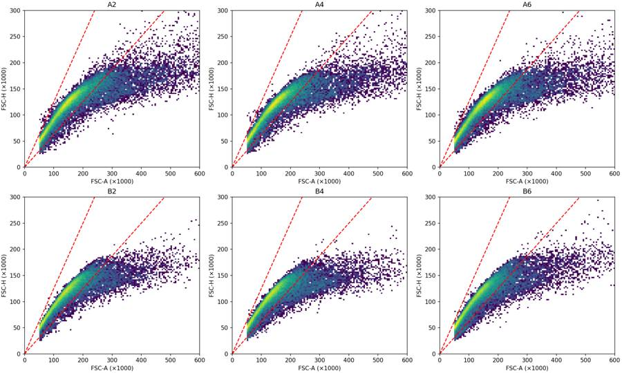
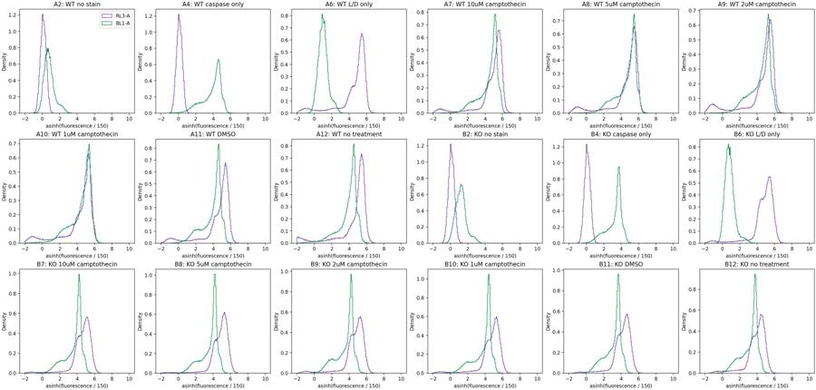
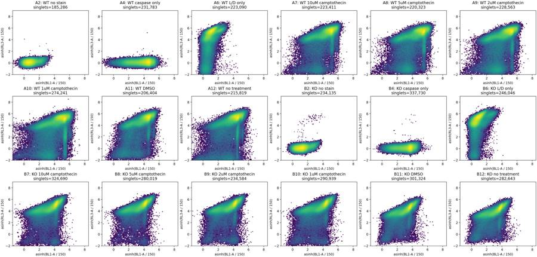
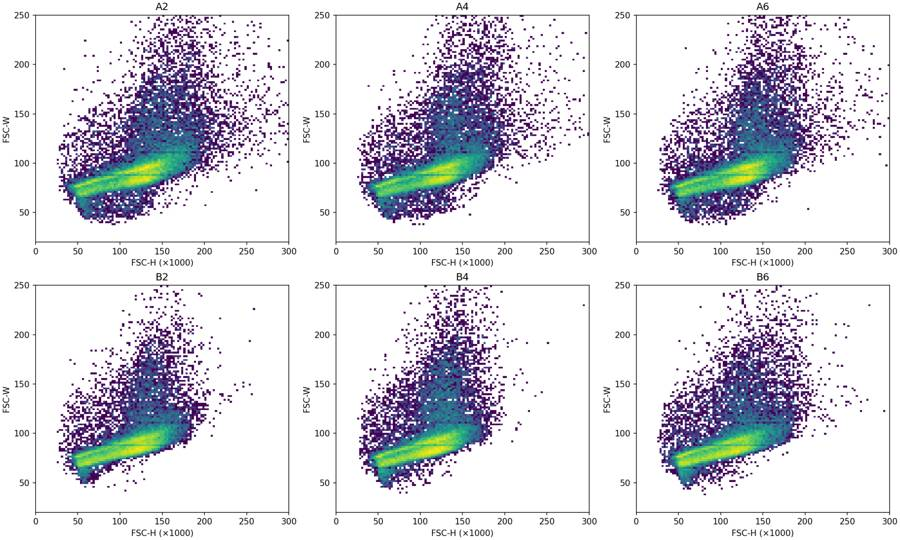
12
agent
A12, the WT untreated well, shows a marked interruption in event flow followed by a burst of events; it should be excluded from biological comparisons. The stained wells also contain a large Zombie NIR–high population. I’ll report caspase signal both within Zombie-low cells and across all singlets, so the viability gate does not hide that limitation.
tool call · exec
const results=await Promise.allSettled([
tools.exec_command({cmd:"python - <<'PY'\nimport pandas as pd\np=pd.read_csv('/task/outputs/explore_gates.csv')\nprint(p[p.well.isin(['A2','A4','A6','B2','B4','B6'])][['well','BL1_q0.99','BL1_q0.995','BL1_q0.999','RL3_q0.99','RL3_q0.995','RL3_q0.999']].to_string(index=False))\nprint(p[['well','live_pct_1000','pos_live_R1000_B2000','pos_live_R1000_B1500']].to_string(index=False))\nPY","max_output_tokens":2000}),
tools.web__run({open:[{ref_id:"https://www.biolegend.com/en-us/protocols/zombie-staining-protocol"},{ref_id:"https://www.biolegend.com/en-us/products/zombie-nir-fixable-viability-kit-8657"},{ref_id:"https://tools.thermofisher.com/content/sfs/manuals/cellevent_caspase_3_7_grn_flow_cytometry_assay_kit_man.pdf"}],response_length:"long"})
]);results.forEach((r,i)=>text({i,...r}));
tool output
Script completed
Wall time 0.5 seconds
Output:
{"i":0,"status":"fulfilled","value":{"chunk_id":"04af9a","wall_time_seconds":0.159358619,"exit_code":0,"original_token_count":436,"output":"well BL1_q0.99 BL1_q0.995 BL1_q0.999 RL3_q0.99 RL3_q0.995 RL3_q0.999\n A2 1007.15 1177.575 1617.430 146.00 160.00 193.000\n A4 17605.00 19348.000 25573.872 147.00 162.00 195.000\n A6 1033.00 1184.000 1583.822 38323.00 43344.44 55790.796\n B2 1579.00 1818.000 2371.464 155.00 174.00 222.000\n B4 7567.00 8348.000 10710.813 151.00 169.00 208.000\n B6 1186.00 1426.775 1999.775 44543.55 50045.00 63236.695\nwell live_pct_1000 pos_live_R1000_B2000 pos_live_R1000_B1500\n A2 99.998381 0.024287 0.145183\n A4 99.999569 73.635571 78.046181\n A6 13.065131 0.096065 0.140666\n A7 8.922569 45.048661 54.615230\n A8 12.578805 52.450025 62.823844\n A9 14.774045 50.302061 60.992656\n A10 15.462312 52.358268 60.473069\n A11 11.844732 28.615838 35.229876\n A12 13.500665 42.530116 48.738717\n B2 99.971384 0.287096 1.232975\n B4 99.996743 62.125021 69.672420\n B6 6.227697 0.032631 0.032631\n B7 4.235733 38.398895 45.110158\n B8 3.069435 35.741710 42.931937\n B9 5.676431 35.468609 41.341244\n B10 5.323796 32.836206 39.582930\n B11 5.800401 18.079872 22.782927\n B12 8.250337 20.665552 25.056821\n"}}
{"i":1,"status":"fulfilled","value":"Internal Error ()\nciteturn1view0 [wordlim: 200] Source: open({\"ref_id\":\"https://www.biolegend.com/en-us/protocols/zombie-staining-protocol\",\"lineno\":null}); \nFailed to fetch https://www.biolegend.com/en-us/protocols/zombie-staining-protocol: Failed to fetch restricted URL--------------------------------------------------------------------------------\nInternal Error ()\nciteturn1view1 [wordlim: 200] Source: open({\"ref_id\":\"https://www.biolegend.com/en-us/products/zombie-nir-fixable-viability-kit-8657\",\"lineno\":null}); \nFailed to fetch https://www.biolegend.com/en-us/products/zombie-nir-fixable-viability-kit-8657: Failed to fetch restricted URL--------------------------------------------------------------------------------\nInternal Error ()\nciteturn1view2 [wordlim: 200] Source: open({\"ref_id\":\"https://tools.thermofisher.com/content/sfs/manuals/cellevent_caspase_3_7_grn_flow_cytometry_assay_kit_man.pdf\",\"lineno\":null}); \nFailed to fetch https://tools.thermofisher.com/content/sfs/manuals/cellevent_caspase_3_7_grn_flow_cytometry_assay_kit_man.pdf: (403) Forbidden"}tool call · exec
text(await tools.apply_patch("*** Begin Patch\n*** Add File: /task/outputs/analyse_plate.py\n+\"\"\"Reproducible FlowKit 1.2.3 analysis of EXP23000279.\n+\n+All input files are read-only. Run: python /task/outputs/analyse_plate.py\n+The exported-and-reloaded strategy is the source of every reported gate count.\n+\"\"\"\n+from pathlib import Path\n+import hashlib\n+import json\n+import platform\n+import numpy as np\n+import pandas as pd\n+import scipy\n+import matplotlib\n+matplotlib.use('Agg')\n+import matplotlib.pyplot as plt\n+import flowkit as fk\n+\n+ROOT=Path('/task')\n+OUT=ROOT/'outputs'\n+LAYOUT=pd.read_csv(ROOT/'inputs/plate_layout.csv')\n+COMP='uncompensated'\n+BL_CUT=2000.0\n+RL_CUT=1000.0\n+\n+POPULATIONS=[\n+ ('all_events','other','none'),\n+ ('acquisition_window','other','all_events'),\n+ ('cells','cells','acquisition_window'),\n+ ('singlets','singlets','cells'),\n+ ('live','live','singlets'),\n+ ('caspase_positive','marker_positive','live'),\n+ ('caspase_all_singlets','other','singlets'),\n+ ('zombie_high','other','singlets'),\n+ ('caspase_zombie_high','other','zombie_high'),\n+]\n+\n+def dimension(channel,lo=None,hi=None):\n+ return fk.Dimension(channel,compensation_ref=COMP,range_min=lo,range_max=hi)\n+\n+def make_strategy():\n+ gs=fk.GatingStrategy()\n+ gs.add_gate(fk.gates.RectangleGate('acquisition_window',[dimension('Time',1,45)]),('root',))\n+ gs.add_gate(fk.gates.RectangleGate('cells',[dimension('FSC-A',50000,950000),dimension('SSC-A',25000,950000)]),('root','acquisition_window'))\n+ gs.add_gate(fk.gates.PolygonGate('singlets',[dimension('FSC-A'),dimension('FSC-H')],[(0,0),(1600000,1000000),(800000,1000000)]),('root','acquisition_window','cells'))\n+ parent=('root','acquisition_window','cells','singlets')\n+ gs.add_gate(fk.gates.RectangleGate('live',[dimension('RL3-A',hi=RL_CUT)]),parent)\n+ gs.add_gate(fk.gates.RectangleGate('caspase_positive',[dimension('BL1-A',lo=BL_CUT)]),parent+('live',))\n+ gs.add_gate(fk.gates.RectangleGate('caspase_all_singlets',[dimension('BL1-A',lo=BL_CUT)]),parent)\n+ gs.add_gate(fk.gates.RectangleGate('zombie_high',[dimension('RL3-A',lo=RL_CUT)]),parent)\n+ gs.add_gate(fk.gates.RectangleGate('caspase_zombie_high',[dimension('BL1-A',lo=BL_CUT)]),parent+('zombie_high',))\n+ return gs\n+\n+def main():\n+ gs=make_strategy()\n+ with (OUT/'gates.xml').open('wb') as handle:\n+ fk.export_gatingml(gs,handle)\n+ saved=fk.parse_gating_xml(str(OUT/'gates.xml'))\n+ count_rows=[]\n+ well_rows=[]\n+ time_rows=[]\n+ sensitivity_rows=[]\n+ hashes={}\n+ for _,row in LAYOUT.iterrows():\n+ path=ROOT/'inputs/raw'/row.file\n+ sample=fk.Sample(str(path))\n+ x=sample.get_events(source='raw')\n+ result=saved.gate_sample(sample)\n+ original=gs.gate_sample(sample)\n+ masks={p:result.get_gate_membership(p) for p,_,_ in POPULATIONS if p!='all_events'}\n+ counts={'all_events':int(sample.event_count)}\n+ counts.update({p:int(result.get_gate_count(p)) for p,_,_ in POPULATIONS if p!='all_events'})\n+ for pop,role,parent in POPULATIONS:\n+ if pop!='all_events':\n+ assert counts[pop]==int(original.get_gate_count(pop)),(row.well,pop)\n+ assert np.array_equal(masks[pop],original.get_gate_membership(pop)),(row.well,pop)\n+ pct=float(result.get_gate_relative_percent(pop))\n+ assert np.isclose(pct,100*counts[pop]/counts[parent])\n+ else:\n+ pct=np.nan\n+ count_rows.append(dict(file=row.file,well=row.well,population=pop,role=role,parent=parent,count=counts[pop],pct_of_parent=pct))\n+ assert counts['live']+counts['zombie_high']==counts['singlets']\n+ assert counts['caspase_positive']+counts['caspase_zombie_high']==counts['caspase_all_singlets']\n+ t=x[:,sample.get_channel_index('Time')]\n+ bl=x[:,sample.get_channel_index('BL1-A')]\n+ rl=x[:,sample.get_channel_index('RL3-A')]\n+ fsc=x[:,sample.get_channel_index('FSC-A')]\n+ ssc=x[:,sample.get_channel_index('SSC-A')]\n+ h=x[:,sample.get_channel_index('FSC-H')]\n+ s=masks['singlets']; l=masks['live']\n+ wr=dict(file=row.file,well=row.well,sample=row['sample'],genotype=row.genotype,treatment=row.treatment,**counts)\n+ wr['primary_pct']=100*counts['caspase_positive']/counts['live']\n+ wr['total_caspase_pct']=100*counts['caspase_all_singlets']/counts['singlets']\n+ wr['live_pct']=100*counts['live']/counts['singlets']\n+ wr['live_caspase_pct_of_singlets']=100*counts['caspase_positive']/counts['singlets']\n+ wr['zombie_high_caspase_pct_of_singlets']=100*counts['caspase_zombie_high']/counts['singlets']\n+ wr['BL1_live_median']=float(np.median(bl[l]))\n+ wr['BL1_singlets_median']=float(np.median(bl[s]))\n+ wr['RL3_singlets_median']=float(np.median(rl[s]))\n+ wr['BL1_singlets_q995']=float(np.quantile(bl[s],.995))\n+ wr['RL3_singlets_q999']=float(np.quantile(rl[s],.999))\n+ wr['BL1_singlets_saturated_pct']=100*np.mean(bl[s]>=1048575)\n+ wr['RL3_singlets_saturated_pct']=100*np.mean(rl[s]>=1048575)\n+ wr['scatter_saturated_raw_pct']=100*np.mean((fsc>=1048575)|(ssc>=1048575))\n+ wr['time_decreases']=int(np.sum(np.diff(t)<0))\n+ wr['max_time_backstep_s']=float(max(0,-np.min(np.diff(t))))\n+ wr['rate_1_17_s']=float(np.sum((t>=1)&(t<17))/16)\n+ wr['rate_20_27_s']=float(np.sum((t>=20)&(t<27))/7)\n+ wr['rate_30_45_s']=float(np.sum((t>=30)&(t<45))/15)\n+ interior=np.histogram(t,bins=np.arange(1,46))[0]\n+ wr['minimum_interior_1s_count']=int(interior.min())\n+ wr['maximum_interior_1s_count']=int(interior.max())\n+ wr['interior_1s_cv']=float(np.std(interior,ddof=1)/np.mean(interior))\n+ wr['coincident_metadata_count']=int(sample.metadata['#coincidentcount'])\n+
… [8,158 more characters not shown]tool output
Script completed
Wall time 1.2 seconds
Output:
{}
{"chunk_id":"e71926","wall_time_seconds":1.001278141,"session_id":86797,"original_token_count":0,"output":""}tool call · exec
const results=await Promise.allSettled([
tools.write_stdin({session_id:86797,chars:"","yield_time_ms":1000,"max_output_tokens":4000}),
tools.web__run({search_query:[{q:'site.biolegend.com \"Zombie NIR\" \"titrated\" \"1:100\"'},{q:'site.revvity.com \"Zombie NIR\" dilution titration'},{q:'site.biolegend.com \"Zombie\" \"overstaining\"'}],open:[{ref_id:"https://documents.thermofisher.com/TFS-Assets/LSG/manuals/cellevent_caspase_3_7_grn_flow_cytometry_assay_kit_man.pdf"}],response_length:"long"})
]);results.forEach((r,i)=>text({i,...r}));
tool output
Script completed
Wall time 0.7 seconds
Output:
{"i":0,"status":"fulfilled","value":{"chunk_id":"301b81","wall_time_seconds":0.000003285,"exit_code":0,"original_token_count":270,"output":"A2: singlets=185,286; live=185,283 (100.00%); caspase+=0.02%\nA4: singlets=231,783; live=231,782 (100.00%); caspase+=73.64%\nA6: singlets=223,090; live=29,147 (13.07%); caspase+=0.10%\nA7: singlets=223,411; live=19,934 (8.92%); caspase+=45.05%\nA8: singlets=220,323; live=27,714 (12.58%); caspase+=52.45%\nA9: singlets=228,563; live=33,768 (14.77%); caspase+=50.30%\nA10: singlets=274,241; live=42,404 (15.46%); caspase+=52.36%\nA11: singlets=206,404; live=24,448 (11.84%); caspase+=28.62%\nA12: singlets=215,819; live=29,137 (13.50%); caspase+=42.53%\nB2: singlets=234,135; live=234,068 (99.97%); caspase+=0.29%\nB4: singlets=337,730; live=337,719 (100.00%); caspase+=62.13%\nB6: singlets=246,046; live=15,323 (6.23%); caspase+=0.03%\nB7: singlets=324,690; live=13,753 (4.24%); caspase+=38.40%\nB8: singlets=280,019; live=8,595 (3.07%); caspase+=35.74%\nB9: singlets=234,584; live=13,316 (5.68%); caspase+=35.47%\nB10: singlets=290,939; live=15,489 (5.32%); caspase+=32.84%\nB11: singlets=301,324; live=17,478 (5.80%); caspase+=18.08%\nB12: singlets=282,643; live=23,319 (8.25%); caspase+=20.67%\n"}}
{"i":1,"status":"fulfilled","value":"Zombie NIR Fixable Viability Kit (https://d1spbj2x7qk4bg.cloudfront.net/fr-lu/products/zombie-nir-fixable-viability-kit-8657?displayInline=true&filename=Zombie+NIR%E2%84%A2+Fixable+Viability+Kit.pdf&leftRightMargin=15&pdf=true&topBottomMargin=15&v=20250227010954)\nciteturn2search12 [wordlim: 200] Published: 4 months ago; Zombie NIR™ dye until fully dissolved. 100 tests = 1 vial of Zombie NIR™ + DMSO, 500 tests = 5 ... that the reagent be titrated for optimal performance for each application, as optimal dosage varies ... Wash one time with 2 mL BioLegend’s Cell Staining Buffer (Cat.\nZombie NIR™ dye, use immediately, or store at -20°C in a dry place and protected from light,\npreferably in a desiccator or in a container with desiccant for no more than one month.\nApplication\nFC - Quality tested\nRecommended Usage\nEach lot of this product is quality control tested by immunofluorescent staining with flow cytometric\nanalysis.\nFor flow cytometry, the suggested dilution is 1:100-1:1000 for 1-10 million cells. It is recommended\nthat the reagent be titrated for optimal performance for each application, as optimal dosage varies\nwith cell type.\nExcitation Laser\nRed Laser (633 nm)\nApplication Notes\nZombie NIR™ dye is excited by the red laser and has fluorescence emission maximum at 746 nm.\nIf using in a multi-color panel design, filter optimization may be required depending on other\nfluorophores used. Zombie NIR™ dye has similar emission to APC/Cyanine7.\nStandard Cell Staining Protocol:\n1. Prior to reconstitution, spin down the vial of lyophilized reagent in a microcentrifuge to\nensure the reagent is at the bottom of the vial.\n2. For reconstitution, pre-warm the kit to room temperature; add 100 µL of DMSO to one vial\n6\nof Zombie NIR™ dye and mix until fully dissolved\n3. Wash cells with PBS buffer (no Tris buffer and protein free).\n4. Dilute Zombie NIR™ dye at 1:100-1000 in PBS. Resuspend 1-10 x 10 cells in diluted\n100 µL Zombie NIR™ solution. To minimize background staining of live cells, titrate the\namount of dye and/or number of cells per 100 µL for optimal performance. Different cell\ntypes can have a wide degree of variability in staining based on cell size and degree of\ncell death.\n1. Note: Don’t use Tris buffer as a diluent and be sure that the PBS does not\ncontain any other protein like BSA or FBS.\n2. Note: The amount of dye used can also influence the ability to detect apoptotic\nas well as live and dead cells.\n5. Incubate the cells at room temperature (or 4°C), in the dark, for 15-30 minutes.\n6. Wash one time with 2 mL BioLegend’s Cell Staining Buffer (Cat. No. 420201) or\nequivalent buffer containing serum or BSA.\n7. Continue performing antibody staining procedure as desired.--------------------------------------------------------------------------------\nProtocol to evaluate markers of reactiveoxygen species and labile iron from a single sample across in vitro and in in vivo lung cancer models (https://pmc.ncbi.nlm.nih.gov/articles/PMC13264167/)\nciteturn2search0 [wordlim: 200] Published: 5 months ago; Crawled: 2 weeks ago; Prepare Zombie NIR viability stain by diluting 1:2000 in 1× PBS. ... Antigen | Fluorochrome | Clone | Dilution\n\n### Viability staining\n\n> Image: Inline graphicTiming: 1–2 h\n\nThis section describes the process of staining for viability.\n\n> Image: Inline graphicCRITICAL: If only staining for ROS markers or luciferase + ROS markers, skip to the ROS Marker Staining section or Luciferase Marker Staining section respectively.\n\n * 51.\n\nCentrifuge the plate at 527 × g at 4°C for 5 min.\n\n * 52.\n\nDecant the liquid by flicking the plate.\n\n * 53.\n\nGently vortex the bottom of the plate.\n\n * 54.\n\nUsing a multichannel pipette, resuspend cell pellets in 200 μL 1× PBS.\n\n * 55.\n\nRepeat 51–54 for a total of 3 PBS washes.\n\n * 56.\n\nPrepare Zombie NIR viability stain by diluting 1:2000 in 1× PBS.\n\n> Note: This protocol uses Zombie NIR, but other viability stains can be optimized and used. Assess similarity and complexity matrix.\n\n * 57.\n\nFollowing the third wash in 1× PBS, decant the liquid by flicking the plate.\n\n * 58.\n\nGently vortex the bottom of the plate.\n--------------------------------------------------------------------------------\n2.2.4.2 General protocol (https://theses.gla.ac.uk/84545/2/2024AlshuwayerPhD.pdf)\nciteturn2search13 [wordlim: 200] Published: 2.2 years ago; The dead-control cells were stained at the lowest recommended dilution of Zombie NIR in PBS, 1:1000, and as that resulted in\n2.2.4.2 General protocol\n\nCells were detached by trypsinisation and then centrifuged at 500 x
… [24,547 more characters not shown]tool call · exec
const results=await Promise.allSettled([
tools.exec_command({cmd:"python - <<'PY'\nimport pandas as pd,json\nw=pd.read_csv('/task/outputs/well_metrics.csv')\nprint(w[['well','singlets','live','caspase_positive','primary_pct','total_caspase_pct','live_pct','BL1_live_median','BL1_singlets_median','BL1_singlets_saturated_pct','RL3_singlets_saturated_pct','time_decreases','max_time_backstep_s','rate_1_17_s','rate_20_27_s','rate_30_45_s','minimum_interior_1s_count','maximum_interior_1s_count','interior_1s_cv']].round(4).to_string(index=False))\ns=pd.read_csv('/task/outputs/gate_sensitivity.csv')\nfor a,b in [('A11','B11'),('A10','B10'),('A9','B9'),('A8','B8'),('A7','B7')]:\n aa=s[s.well==a].set_index(['variant','BL1_threshold','RL3_threshold']);bb=s[s.well==b].set_index(['variant','BL1_threshold','RL3_threshold'])\n delta=bb.primary_pct-aa.primary_pct\n print(a,b,'KO-WT range',delta.min(),delta.max(),'all negative?',bool((delta<0).all()))\nprint('flags\\n',pd.read_csv('/task/outputs/flags.csv')[['well','issue_type','decision']].to_string(index=False))\nprint('gates\\n',open('/task/outputs/gates.xml').read()[:2000])\nPY","max_output_tokens":5000}),
tools.view_image({path:"/task/outputs/figure.png"})
]);results.forEach((r,i)=>{if(i===1&&r.status==="fulfilled")image(r.value.image_url);else text({i,...r});});
tool output
Script completed Wall time 0.3 seconds Output:
{"i":0,"status":"fulfilled","value":{"chunk_id":"d92430","wall_time_seconds":0.167993668,"exit_code":0,"original_token_count":2286,"output":"well singlets live caspase_positive primary_pct total_caspase_pct live_pct BL1_live_median BL1_singlets_median BL1_singlets_saturated_pct RL3_singlets_saturated_pct time_decreases max_time_backstep_s rate_1_17_s rate_20_27_s rate_30_45_s minimum_interior_1s_count maximum_interior_1s_count interior_1s_cv\n A2 185286 185283 45 0.0243 0.0243 99.9984 118.0 118.0 0.0 0.0 0 0.000 8139.9375 7957.5714 7369.2667 6551 8559 0.0597\n A4 231783 231782 170674 73.6356 73.6357 99.9996 4980.0 4980.0 0.0 0.0 0 0.000 9516.7500 9389.5714 9273.7333 8453 10043 0.0341\n A6 223090 29147 28 0.0961 0.0287 13.0651 77.0 175.0 0.0 0.0 0 0.000 9178.0000 9296.5714 8576.9333 7515 9741 0.0577\n A7 223411 19934 8980 45.0487 83.0080 8.9226 1727.5 9194.0 0.0 0.0 0 0.000 8735.3750 8568.7143 8102.9333 7127 9212 0.0554\n A8 220323 27714 14536 52.4500 84.2844 12.5788 2129.0 11457.0 0.0 0.0 1 3.909 8846.4375 8616.2857 7311.8667 6232 12591 0.1174\n A9 228563 33768 16986 50.3021 81.2651 14.7740 2012.0 8870.0 0.0 0.0 0 0.000 9538.9375 9270.5714 8464.4667 7647 10328 0.0650\n A10 274241 42404 22202 52.3583 81.0098 15.4623 2167.0 9181.0 0.0 0.0 0 0.000 12765.2500 11903.1429 10470.7333 9391 13883 0.0933\n A11 206404 24448 6996 28.6158 75.2863 11.8447 764.0 5555.0 0.0 0.0 0 0.000 8253.5625 8278.8571 7704.0667 7057 8473 0.0427\n A12 215819 29137 12392 42.5301 78.8948 13.5007 1409.0 5242.0 0.0 0.0 0 0.000 144.6875 15080.2857 13976.9333 0 22923 0.9433\n B2 234135 234068 672 0.2871 0.2917 99.9714 225.0 225.0 0.0 0.0 0 0.000 8427.0625 8752.5714 8124.2000 7834 8910 0.0362\n B4 337730 337719 209808 62.1250 62.1251 99.9967 2606.0 2606.0 0.0 0.0 0 0.000 13379.4375 13322.5714 12064.8000 10957 13619 0.0555\n B6 246046 15323 5 0.0326 0.1004 6.2277 69.0 131.0 0.0 0.0 0 0.000 9964.6875 10147.4286 9363.6000 8880 10556 0.0415\n B7 324690 13753 5281 38.3989 71.4241 4.2357 1226.0 4159.0 0.0 0.0 0 0.000 13783.0625 13172.0000 12409.3333 11806 14304 0.0521\n B8 280019 8595 3072 35.7417 71.4994 3.0694 1151.0 4052.0 0.0 0.0 1 4.388 11422.8125 10848.8571 9915.5333 9156 15521 0.0936\n B9 234584 13316 4723 35.4686 68.7984 5.6764 1008.0 3944.0 0.0 0.0 0 0.000 9624.1250 9356.2857 8395.7333 7840 9932 0.0648\n B10 290939 15489 5086 32.8362 73.1751 5.3238 981.0 4954.0 0.0 0.0 0 0.000 12036.8125 11584.2857 10787.8667 9447 12446 0.0557\n B11 301324 17478 3160 18.0799 56.9467 5.8004 498.0 2360.0 0.0 0.0 0 0.000 12656.0625 12578.5714 11463.4667 10714 13143 0.0513\n B12 2
… [3,438 more characters not shown]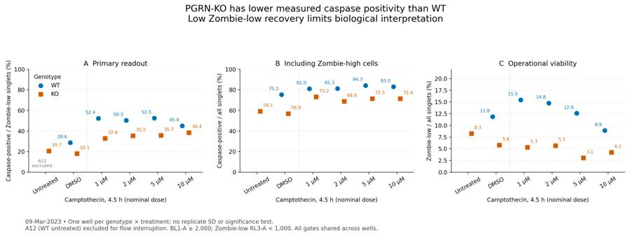
tool call · exec
text(await tools.exec_command({cmd:"python - <<'PY'\nimport numpy as np,pandas as pd,flowkit as fk\nfor well in ['A8','B8']:\n s=fk.Sample(f'/task/inputs/raw/Caspase_WT_KO_optimization_caspase_Group_{well}.fcs');x=s.get_events(source='raw');t=x[:,0]\n for i in np.flatnonzero(np.diff(t)<0):\n print(well,'reset index',i,'previous first/last',t[0],t[i],'following',t[i+1],t[-1], 'initial block n',i+1,'max initial',t[:i+1].max(),'n initial Time>=5',np.sum(t[:i+1]>=5))\n print('FSC medians initial/later',np.median(x[:i+1,1]),np.median(x[i+1:,1]))\np=pd.read_csv('/task/outputs/gate_sensitivity.csv')\na=p[p.well=='A7'].set_index(['variant','BL1_threshold','RL3_threshold']);b=p[p.well=='B7'].set_index(['variant','BL1_threshold','RL3_threshold'])\nv=pd.DataFrame({'WT':a.primary_pct,'KO':b.primary_pct,'KO-WT':b.primary_pct-a.primary_pct})\nprint(v.to_string())\nprint(pd.read_csv('/task/outputs/time_binned_qc.csv').query('well in [\"A11\", \"B11\", \"A12\", \"B12\"]').round(3).to_string(index=False))\nPY","max_output_tokens":3000}));
tool output
Script completed
Wall time 1.2 seconds
Output:
{"chunk_id":"625572","wall_time_seconds":1.059403536,"exit_code":0,"original_token_count":1036,"output":"A8 reset index 3978 previous first/last 3.379 3.923 following 0.014 46.891 initial block n 3979 max initial 3.923 n initial Time>=5 0\nFSC medians initial/later 128738.0 131324.0\nB8 reset index 5808 previous first/last 3.856 4.402 following 0.014 46.105000000000004 initial block n 5809 max initial 4.402 n initial Time>=5 0\nFSC medians initial/later 103514.0 109083.0\n WT KO KO-WT\nvariant BL1_threshold RL3_threshold \nfluorescence_thresholds 1500.0 500.0 51.625062 46.210197 -5.414864\n 1000.0 54.615230 45.110158 -9.505072\n 2000.0 56.799072 40.709082 -16.089990\n 2000.0 500.0 41.442165 39.685485 -1.756680\n 1000.0 45.048661 38.398895 -6.649766\n 2000.0 47.823386 34.443905 -13.379481\n 2500.0 500.0 33.477509 35.407306 1.929797\n 1000.0 37.624160 34.254345 -3.369815\n 2000.0 40.947687 30.505100 -10.442587\ncells_loose 2000.0 1000.0 42.407271 30.674463 -11.732808\ncells_strict 2000.0 1000.0 46.564637 45.258316 -1.306321\nsinglets_strict 2000.0 1000.0 48.139373 37.404844 -10.734529\nsinglets_loose 2000.0 1000.0 43.255112 38.493666 -4.761447\nlate_window 2000.0 1000.0 45.572591 38.574329 -6.998262\nwell start_s end_s raw_count raw_events_per_s fsc_a_median singlets_count live_count live_pct primary_pct\n A11 1 10 74636 8292.889 118405.5 44514 5317 11.945 28.494\n A11 10 20 81244 8124.400 126758.0 46556 5372 11.539 29.486\n A11 20 30 83248 8324.800 137522.5 48322 5760 11.920 29.097\n A11 30 40 78748 7874.800 137965.0 45796 5484 11.975 27.899\n A11 40 45 36813 7362.600 133110.0 21216 2515 11.854 27.475\n A12 1 10 864 96.000 134294.0 503 70 13.917 38.571\n A12 10 20 1588 158.800 106225.0 642 193 30.062 49.223\n A12 20 30 169587 16958.700 141052.0 104019 14977 14.398 39.461\n A12 30 40 143089 14308.900 146182.0 75183 9385 12.483 45.381\n A12 40 45 66565 13313.000 147669.0 35472 4512 12.720 46.565\n B11 1 10 115443 12827.000 87942.0 65077 3886 5.971 18.271\n B11 10 20 124249 12424.900 96649.0 68872 3936 5.715 18.089\n B11 20 30 125431 12543.100 104571.0 70820 4074 5.753 18.606\n B11 30 40 116776 11677.600 101143.5 65755 3895 5.924 17.741\n B11 40 45 55176 11035.200 97722.5 30800 1687 5.477 17.131\n B12 1 10 112420 12491.111 93959.0 63709 5431 8.525 20.586\n B12 10 20 116342 11634.200 103157.5 64588 5301 8.207 21.788\n B12 20 30 115109 11510.900 111065.0 64939 5166 7.955 20.228\n B12 30 40 107539 10753.900 106932.0 60561 5014 8.279 20.164\n B12 40 45 51335 10267.000 100045.0 28846 2407 8.344 20.357\n"}17
agent
The shared gates and counts are saved. The DMSO wells show lower caspase positivity in KO than WT, and both genotypes increase after camptothecin, though the dose response is not monotonic. Only a small fraction of singlets pass the Zombie-low gate, so I’m checking threshold sensitivity before drawing a biological conclusion.
tool call · exec
text(await tools.apply_patch("*** Begin Patch\n*** Update File: /task/outputs/analyse_plate.py\n@@\n BL_CUT=2000.0\n RL_CUT=1000.0\n+TIME_START=5.0\n+TIME_END=45.0\n@@\n- gs.add_gate(fk.gates.RectangleGate('acquisition_window',[dimension('Time',1,45)]),('root',))\n+ gs.add_gate(fk.gates.RectangleGate('acquisition_window',[dimension('Time',TIME_START,TIME_END)]),('root',))\n@@\n- for lo,hi in [(1,10),(10,20),(20,30),(30,40),(40,45)]:\n+ for lo,hi in [(0,5),(5,10),(10,20),(20,30),(30,40),(40,45)]:\n@@\n- sensitivity_rows.append(dict(well=row.well,variant='fluorescence_thresholds',BL1_threshold=bc,RL3_threshold=rc,FSC_A_min=50000,area_height_max=1.6,time_start=1,time_end=45,singlets_n=int(s.sum()),live_n=int(lv.sum()),primary_pct=100*np.sum(lv&(bl>=bc))/lv.sum(),total_caspase_pct=100*np.sum(s&(bl>=bc))/s.sum(),live_pct=100*lv.sum()/s.sum()))\n- for label,amin,ahmax,tlo,thi in [('cells_loose',40000,1.6,1,45),('cells_strict',60000,1.6,1,45),('singlets_strict',50000,1.4,1,45),('singlets_loose',50000,1.8,1,45),('late_window',50000,1.6,30,45)]:\n+ sensitivity_rows.append(dict(well=row.well,variant='fluorescence_thresholds',BL1_threshold=bc,RL3_threshold=rc,FSC_A_min=50000,area_height_max=1.6,time_start=TIME_START,time_end=TIME_END,singlets_n=int(s.sum()),live_n=int(lv.sum()),primary_pct=100*np.sum(lv&(bl>=bc))/lv.sum(),total_caspase_pct=100*np.sum(s&(bl>=bc))/s.sum(),live_pct=100*lv.sum()/s.sum()))\n+ for label,amin,ahmax,tlo,thi in [('cells_loose',40000,1.6,5,45),('cells_strict',60000,1.6,5,45),('singlets_strict',50000,1.4,5,45),('singlets_loose',50000,1.8,5,45),('early_included',50000,1.6,1,45),('late_window',50000,1.6,30,45)]:\n@@\n- evidence+=f' {int(r.time_decreases)} timestamp reversal ({r.max_time_backstep_s:.3f} s), without a sustained flow collapse.'\n+ evidence+=f' {int(r.time_decreases)} startup timestamp reversal ({r.max_time_backstep_s:.3f} s); the common 5-45 s gate removes the entire preceding block.'\n@@\n- verification=dict(flowkit=fk.__version__,python=platform.python_version(),numpy=np.__version__,pandas=pd.__version__,scipy=scipy.__version__,matplotlib=matplotlib.__version__,files=len(LAYOUT),populations=len(POPULATIONS),count_rows=len(count_rows),xml_roundtrip_counts_identical=True,xml_roundtrip_memberships_identical=True,input_sha256=hashes,gate_xml_sha256=hashlib.sha256((OUT/'gates.xml').read_bytes()).hexdigest(),compensation='Uncompensated; every FCS spillover matrix is identity.',BL1_positive_threshold=BL_CUT,RL3_live_upper_bound=RL_CUT)\n+ verification=dict(flowkit=fk.__version__,python=platform.python_version(),numpy=np.__version__,pandas=pd.__version__,scipy=scipy.__version__,matplotlib=matplotlib.__version__,files=len(LAYOUT),populations=len(POPULATIONS),count_rows=len(count_rows),xml_roundtrip_counts_identical=True,xml_roundtrip_memberships_identical=True,input_sha256=hashes,gate_xml_sha256=hashlib.sha256((OUT/'gates.xml').read_bytes()).hexdigest(),compensation='Uncompensated; every FCS spillover matrix is identity.',BL1_positive_threshold=BL_CUT,RL3_live_upper_bound=RL_CUT,time_window_seconds=[TIME_START,TIME_END])\n*** End Patch"));
text(await tools.exec_command({cmd:"python /task/outputs/analyse_plate.py","yield_time_ms":1000,"max_output_tokens":2000}));
tool output
Script completed
Wall time 1.2 seconds
Output:
{}
{"chunk_id":"7cb0b0","wall_time_seconds":1.001215739,"session_id":56647,"original_token_count":0,"output":""}tool call · exec
text(await tools.apply_patch("*** Begin Patch\n*** Add File: /task/outputs/plot_qc.py\n+\"\"\"Final diagnostic plots using the saved gates, not exploratory masks.\"\"\"\n+from pathlib import Path\n+import numpy as np\n+import pandas as pd\n+import matplotlib\n+matplotlib.use('Agg')\n+import matplotlib.pyplot as plt\n+from matplotlib.colors import LogNorm\n+from matplotlib.patches import Rectangle\n+import flowkit as fk\n+\n+OUT=Path('/task/outputs')\n+layout=pd.read_csv('/task/inputs/plate_layout.csv')\n+gs=fk.parse_gating_xml(str(OUT/'gates.xml'))\n+rng=np.random.default_rng(20230309)\n+plt.rcParams.update({'font.size':10,'axes.spines.top':False,'axes.spines.right':False})\n+fig,ax=plt.subplots(2,4,figsize=(19,10))\n+ft,at=plt.subplots(3,6,figsize=(24,11),constrained_layout=True)\n+ff,af=plt.subplots(3,6,figsize=(24,11),constrained_layout=True)\n+colors={'A2':'#56B4E9','B2':'#E69F00','A4':'#0072B2','B4':'#D55E00','A6':'#009E73','B6':'#CC79A7'}\n+control_scatter=[]\n+control_singlets=[]\n+tickraw=np.array([-500,0,500,2000,10000,50000])\n+tickpos=np.arcsinh(tickraw/150)\n+ticklab=['−500','0','500','2k','10k','50k']\n+blcut=np.arcsinh(2000/150)\n+rlcut=np.arcsinh(1000/150)\n+for i,row in layout.iterrows():\n+ sample=fk.Sample('/task/inputs/raw/'+row.file)\n+ x=sample.get_events(source='raw')\n+ res=gs.gate_sample(sample)\n+ masks={k:res.get_gate_membership(k) for k in ['acquisition_window','cells','singlets','live','caspase_positive']}\n+ t,a,ssc,bl,rl,h,sh,w,sw=x.T\n+ sing=masks['singlets']\n+ if row.treatment in ['no stain','caspase only','L/D only']:\n+ idx=np.flatnonzero(masks['acquisition_window']);idx=rng.choice(idx,min(7000,len(idx)),replace=False)\n+ control_scatter.append(x[idx])\n+ idx=np.flatnonzero(masks['cells']);idx=rng.choice(idx,min(7000,len(idx)),replace=False)\n+ control_singlets.append(x[idx])\n+ if row.well in ['A2','B2','A6','B6']:\n+ ax[0,2].hist(np.arcsinh(bl[sing]/150),bins=np.linspace(-2,8,160),density=True,histtype='step',color=colors[row.well],label=f'{row.well}: {row[\"sample\"]}',lw=1.2)\n+ if row.well in ['A2','B2','A6','B6']:\n+ ax[0,3].hist(np.arcsinh(rl[sing]/150),bins=np.linspace(-3,9,160),density=True,histtype='step',color=colors[row.well],label=f'{row.well}: {row[\"sample\"]}',lw=1.2)\n+ if row.well in ['A11','B11','A7','B7']:\n+ j=['A11','B11','A7','B7'].index(row.well)\n+ aa=ax[1,j]\n+ aa.hist2d(np.arcsinh(bl[sing]/150),np.arcsinh(rl[sing]/150),bins=140,range=((-2.5,8.5),(-3,9)),norm=LogNorm())\n+ aa.axvline(blcut,color='#d62728',lw=1.2)\n+ aa.axhline(rlcut,color='#d62728',lw=1.2)\n+ aa.set(title=f'{row.well}: {row[\"sample\"]}\\nZombie-low {100*masks[\"live\"].sum()/sing.sum():.2f}%; caspase+ of low {100*masks[\"caspase_positive\"].sum()/masks[\"live\"].sum():.2f}%',xlabel='BL1-A (asinh display)',ylabel='RL3-A (asinh display)',xticks=tickpos,xticklabels=ticklab,yticks=tickpos,yticklabels=ticklab)\n+ aa=af.flat[i]\n+ aa.hist2d(np.arcsinh(bl[sing]/150),np.arcsinh(rl[sing]/150),bins=100,range=((-2.5,8.5),(-3,9)),norm=LogNorm())\n+ aa.axvline(blcut,color='#d62728',lw=1)\n+ aa.axhline(rlcut,color='#d62728',lw=1)\n+ aa.set(title=f'{row.well}: {row[\"sample\"]}\\n{sing.sum():,} singlets'+(' — EXCLUDED' if row.well=='A12' else ''),xlabel='BL1-A',ylabel='RL3-A',xticks=tickpos,xticklabels=ticklab,yticks=tickpos,yticklabels=ticklab)\n+ bins=np.arange(0,49)\n+ n,_=np.histogram(t,bins=bins)\n+ aa=at.flat[i]\n+ aa.step(bins[:-1]+.5,n,where='mid',c='#333333',lw=1)\n+ aa.axvspan(0,5,color='#cccccc',alpha=.5)\n+ aa.axvspan(45,48,color='#cccccc',alpha=.5)\n+ aa.set(title=f'{row.well}: {row[\"sample\"]}'+('\\nEXCLUDED: flow interruption' if row.well=='A12' else ''),xlabel='Time (s)',ylabel='Events / second',xlim=(0,48))\n+ if row.well=='A12': aa.set_facecolor('#fff0f0')\n+ ii=np.searchsorted(bins,t,side='right')-1\n+ med=np.array([np.median(a[ii==j])/1000 if np.any(ii==j) else np.nan for j in range(len(n))])\n+ twin=aa.twinx();twin.plot(bins[:-1]+.5,med,c='#D55E00',lw=1)\n+ twin.set_ylabel('Median FSC-A (×1000)',color='#D55E00')\n+pool=np.concatenate(control_scatter)\n+ax[0,0].hist2d(np.log10(np.maximum(pool[:,1],1)),np.log10(np.maximum(pool[:,2],1)),bins=140,range=((4.2,6.1),(3.7,6.1)),norm=LogNorm())\n+ax[0,0].add_patch(Rectangle((np.log10(50000),np.log10(25000)),np.log10(950000/50000),np.log10(950000/25000),fill=False,edgecolor='#d62728',lw=1.5))\n+ax[0,0].set(title='Cells: shared scatter gate\\nEqual-sized samples of six controls',xlabel='log10 FSC-A',ylabel='log10 SSC-A')\n+pool=np.concatenate(control_singlets)\n+ax[0,1].hist2d(pool[:,1]/1000,pool[:,5]/1000,bins=140,range=((0,600),(0,350)),norm=LogNorm())\n+ax[0,1].plot([0,560],[0,350],c='#d62728',lw=1.5)\n+ax[0,1].plot([0,280],[0,350],c='#d62728',lw=1.5)\n+ax[0,1].set(title='Singlets: shared area/height gate\\n0.8 ≤ FSC-A / FSC-H ≤ 1.6',xlabel='FSC-A (×1000)',ylabel='FSC-H (×1000)')\n+ax[0,2].axvline(blcut,color='#d62728',lw=1.5,label='BL1-A = 2,000')\n+ax[0,2].set(title='Caspase-negative controls\\nUnstained and Zombie-only singlets',xlabel='BL1-A (asinh display)',ylabel='Density',xticks=tickpos,xticklabels=ticklab,xlim=(-2,7))\n+ax[0,2].legend(frameon=False,fontsize=8)\n+ax[0,3].axvline(rlcut,color='#d62728',lw=1.5,label='RL3-A = 1,000')\n+ax[0,3].set(title='Viability controls\\nOperational boundary; no killed control',xlabel='RL3-A (asinh display)',ylabel='Density',xticks=tickpos,xticklabels=ticklab,xlim=(-3,9))\n+ax[0,3].legend(frameon=False,fontsize=8)\n+fig.suptitle('Final shared gates • uncompensated detector values • 5 ≤ Time < 45 s',fontsize=17)\n+fig.text(.02,.015,'Fluorescence display: asinh(value / 150), tick labels in raw detector units. Gates themselves use raw values.\\nCaspase+ within Zombie-low is the primary metric; all-singlet caspase+ and Zombie-high caspase+ are retained to show possible survivor selection.',fontsize=11)\n+fig.tigh
… [831 more characters not shown]tool output
Script completed
Wall time 1.2 seconds
Output:
{}
{"i":0,"status":"fulfilled","value":{"chunk_id":"bf382a","wall_time_seconds":0.000003685,"exit_code":0,"original_token_count":270,"output":"A2: singlets=166,986; live=166,984 (100.00%); caspase+=0.02%\nA4: singlets=209,953; live=209,952 (100.00%); caspase+=73.78%\nA6: singlets=201,846; live=26,250 (13.00%); caspase+=0.10%\nA7: singlets=201,480; live=17,966 (8.92%); caspase+=45.30%\nA8: singlets=196,207; live=24,656 (12.57%); caspase+=52.58%\nA9: singlets=204,912; live=30,105 (14.69%); caspase+=50.63%\nA10: singlets=245,048; live=37,666 (15.37%); caspase+=52.66%\nA11: singlets=186,565; live=22,081 (11.84%); caspase+=28.54%\nA12: singlets=215,321; live=29,072 (13.50%); caspase+=42.53%\nB2: singlets=213,288; live=213,224 (99.97%); caspase+=0.29%\nB4: singlets=305,221; live=305,212 (100.00%); caspase+=62.27%\nB6: singlets=223,543; live=13,923 (6.23%); caspase+=0.04%\nB7: singlets=292,394; live=12,365 (4.23%); caspase+=38.67%\nB8: singlets=249,236; live=7,612 (3.05%); caspase+=35.63%\nB9: singlets=211,715; live=12,069 (5.70%); caspase+=35.81%\nB10: singlets=262,842; live=14,017 (5.33%); caspase+=32.85%\nB11: singlets=272,161; live=15,720 (5.78%); caspase+=18.02%\nB12: singlets=253,691; live=20,826 (8.21%); caspase+=20.62%\n"}}
{"i":1,"status":"fulfilled","value":{"chunk_id":"cde0df","wall_time_seconds":1.001137426,"session_id":2094,"original_token_count":0,"output":""}}tool call · exec
text(await tools.exec_command({cmd:"python - <<'PY'\nimport pandas as pd,json,numpy as np\nw=pd.read_csv('/task/outputs/well_metrics.csv').set_index('well')\nprint(w[['sample','singlets','live','caspase_positive','primary_pct','total_caspase_pct','live_pct','BL1_live_median','BL1_singlets_median','BL1_singlets_q995','RL3_singlets_q999']].round(4).to_string())\nfor a,b in [('A11','B11'),('A10','B10'),('A9','B9'),('A8','B8'),('A7','B7'),('A11','A7'),('B11','B7'),('A11','A8'),('B11','B10'),('B12','B11')]:\n print(a,b,'primary pp=',w.loc[b,'primary_pct']-w.loc[a,'primary_pct'],'fold=',w.loc[b,'primary_pct']/w.loc[a,'primary_pct'],'total pp=',w.loc[b,'total_caspase_pct']-w.loc[a,'total_caspase_pct'])\ns=pd.read_csv('/task/outputs/gate_sensitivity.csv')\nfor a,b in [('A11','B11'),('A10','B10'),('A9','B9'),('A8','B8'),('A7','B7')]:\n aa=s[s.well==a].set_index(['variant','BL1_threshold','RL3_threshold']); bb=s[s.well==b].set_index(['variant','BL1_threshold','RL3_threshold']);d=bb.primary_pct-aa.primary_pct\n print('sens',a,b,d.min(),d.max())\nprint('sens b11 lowfraction',s[s.well=='B11'][['variant','BL1_threshold','RL3_threshold','live_pct','primary_pct']].round(3).to_string(index=False))\nm=json.load(open('/task/outputs/fcs_metadata.json'))\nlay=pd.read_csv('/task/inputs/plate_layout.csv')\nfor r in lay.itertuples():\n assert m[r.well]['wellid']==r.well\n assert m[r.well]['date']=='09-Mar-2023'\nprint('spillovers',set(v['spillover'] for v in m.values()))\nprint('volts',set(tuple(v['p'+str(i)+'v'] for i in range(1,10)) for v in m.values()))\nprint('threshold',set(v['#tr1'] for v in m.values()))\nPY","max_output_tokens":5000}));
tool output
Script completed
Wall time 0.4 seconds
Output:
{"chunk_id":"95714d","wall_time_seconds":0.20906969,"exit_code":0,"original_token_count":1551,"output":" sample singlets live caspase_positive primary_pct total_caspase_pct live_pct BL1_live_median BL1_singlets_median BL1_singlets_q995 RL3_singlets_q999\nwell \nA2 WT no stain 166986 166984 40 0.0240 0.0240 99.9988 118.0 118.0 1180.000 193.000\nA4 WT caspase only 209953 209952 154895 73.7764 73.7765 99.9995 4955.0 4955.0 19266.000 195.000\nA6 WT L/D only 201846 26250 27 0.1029 0.0312 13.0050 77.0 177.0 1193.000 55857.455\nA7 WT 10uM camptothecin 201480 17966 8139 45.3022 83.0777 8.9170 1743.5 9123.0 31175.445 65051.647\nA8 WT 5uM camptothecin 196207 24656 12965 52.5835 84.3589 12.5663 2139.0 11383.0 41689.910 57912.430\nA9 WT 2uM camptothecin 204912 30105 15241 50.6261 81.3984 14.6917 2028.0 8837.0 34278.005 57794.204\nA10 WT 1uM camptothecin 245048 37666 19836 52.6629 81.1776 15.3709 2190.5 9151.0 37304.530 47214.295\nA11 WT DMSO 186565 22081 6302 28.5404 75.3850 11.8356 758.0 5549.0 18511.540 53339.052\nA12 WT no treatment 215321 29072 12365 42.5323 78.9143 13.5017 1408.5 5246.0 20074.200 58617.840\nB2 KO no stain 213288 213224 629 0.2950 0.3001 99.9700 229.0 229.0 1827.000 223.000\nB4 KO caspase only 305221 305212 190069 62.2744 62.2742 99.9971 2606.0 2606.0 8301.800 207.000\nB6 KO L/D only 223543 13923 5 0.0359 0.1056 6.2283 70.0 133.0 1432.290 63238.000\nB7 KO 10uM camptothecin 292394 12365 4782 38.6737 71.5586 4.2289 1231.0 4154.0 13340.000 48434.000\nB8 KO 5uM camptothecin 249236 7612 2712 35.6280 71.5611 3.0541 1133.0 4043.0 12729.475 55859.830\nB9 KO 2uM camptothecin 211715 12069 4322 35.8108 68.8142 5.7006 1016.0 3939.0 13186.440 54086.018\nB10 KO 1uM camptothecin 262842 14017 4604 32.8458 73.2927 5.3329 979.0 4951.0 15518.590 55200.318\nB11 KO DMSO 272161 15720 2833 18.0216 57.0118 5.7760 491.0 2358.0 7923.200 31380.720\nB12 KO no treatment 253691 20826 4295 20.6233 59.1716 8.2092 464.0 2567.0 8715.550 25938.240\nA11 B11 primary pp= -10.518745578533256 fold= 0.6314433178045179 total pp= -18.373144210707252\nA10 B10 primary pp= -19.817048925514328 fold= 0.623699856408337 total pp= -7.884864653964101\nA9 B9 primary pp= -14.815387010489388 fold= 0.7073569805453822 total pp= -12.584148588285473\nA8 B8 primary pp= -16.95559378391917 fold= 0.6775494636819814 total pp= -12.797775198476558\nA7 B7 primary pp= -6.628561862301879 fold= 0.8536813583755798 total pp= -11.519142922766477\nA11 A7 primary pp= 16.76186348257425 fold= 1.5873035664213297 total pp= 7.692738370369028\nB11 B7 primary pp= 20.652047198805626 fold= 2.145958990346715 total pp= 14.546739658309804\nA11 A8 primary pp= 24.04317556582791 fold= 1.8424267846224152 total pp= 8.97387942579185\nB11 B10 primary pp= 14.82420156476659 fold= 1.8225783572118983 total pp= 16.28085830261378\nB12 B11 primary pp= -2.6016308885765937 fold= 0.873849674306179 total pp= -2.159748380716536\nsens A11 B11 -22.67366063397424 -7.495697646785203\nsens A10 B10 -22.6847954106848 -15.55653019251298\nsens A9 B9 -22.117336641931004 -6.775492046337323\nsens A8 B8 -25.70112930151489 -8.394459506394274\nsens A7 B7 -16.209158376884822 1.7555657968915526\nsens b11 lowfraction variant BL1_threshold RL3_threshold live_pct primary_pct\nfluorescence_thresholds 1500.0 500.0 4.065 20.738\nfluorescence_thresholds 1500.0 1000.0 5.776 22.723\nfluorescence_thresholds 1500.0 2000.0 12.223 15.343\nfluorescence_thresholds 2000.0 500.0 4.065 15.865\nfluorescence_thresholds 2000.0 1000.0 5.776 18.022\nfluorescence_thresholds 2000.0 2000.0 12.223 11.721\nfluorescence_thresholds 2500.0 500.0 4.065 11.291\nfluorescence_thresholds 2500.0 1000.0 5.776 13.041\nfluorescence_thresholds 2500.0 2000.0 12.223 8.600\n cells_loose 2000.0 1000.0 7.183 13.356\n cells_strict 2000.0 1000.0 5.094 21.620\n singlets_strict 2000.0 1000.0 5.408
… [410 more characters not shown]tool call · exec
text(await tools.apply_patch("*** Begin Patch\n*** Add File: /task/outputs/write_report.py\n+\"\"\"Generate report.md and answer.json from the final exported statistics.\"\"\"\n+from pathlib import Path\n+import json\n+import pandas as pd\n+\n+OUT=Path('/task/outputs')\n+w=pd.read_csv(OUT/'well_metrics.csv').set_index('well')\n+flags=pd.read_csv(OUT/'flags.csv')\n+summary=pd.read_csv(OUT/'condition_summary.csv')\n+sens=pd.read_csv(OUT/'gate_sensitivity.csv')\n+question='Is a difference in caspase activity present in PGRNKOs compared to WT PGP1 neurons?'\n+\n+def cond(well):\n+ return w.loc[well,'sample']+' | caspase_pct_live'\n+\n+def comparison(name,a,b,note=''):\n+ av=w.loc[a,'primary_pct']; bv=w.loc[b,'primary_pct']\n+ return dict(comparison=name,a=cond(a),b=cond(b),direction='increase' if bv>av else 'decrease' if bv<av else 'no_clear_change',magnitude=f'{av:.2f}% to {bv:.2f}%; {bv-av:+.2f} percentage points; b/a={bv/av:.3f}. '+note,confidence='low')\n+\n+comparisons=[comparison('PGRN-KO versus WT in DMSO', 'A11','B11','One well per genotype; matched vehicle comparison.'),\n+ comparison('PGRN-KO versus WT at 1 uM camptothecin','A10','B10'),\n+ comparison('PGRN-KO versus WT at 2 uM camptothecin','A9','B9'),\n+ comparison('PGRN-KO versus WT at 5 uM camptothecin','A8','B8'),\n+ comparison('PGRN-KO versus WT at 10 uM camptothecin','A7','B7','The sign changes under one joint fluorescence-threshold sensitivity setting; this contrast is especially uncertain.'),\n+ comparison('WT: DMSO to 10 uM camptothecin','A11','A7','Descriptive response; vehicle exposure may not be matched.'),\n+ comparison('PGRN-KO: DMSO to 10 uM camptothecin','B11','B7','Descriptive response; vehicle exposure may not be matched.')]\n+next_change=dict(what='Zombie NIR staining dilution',\n+ **{'from':'1:500 in PBS, 200 uL per well, 10 min',\n+ 'to':'Test 1:500, 1:1000 and 1:2000 in parallel at the same 200 uL volume and 10 min incubation, using independently verified live and killed neuronal controls; select the dilution with the best live/dead separation.',\n+ 'why':'Only 3.05-15.37% of singlets in usable fully stained wells are Zombie-low, including 11.84% WT and 5.78% KO in DMSO. The current run cannot distinguish extensive cell damage from excessive staining/background. Validate the viability gate before interpreting genotype or AAV rescue effects; dilution is an optimisation test, not a proven fix.'})\n+excluded=flags.loc[flags.decision=='exclude','well'].tolist()\n+answer=dict(question=question,comparisons=comparisons,\n+ overall_answer='partial: This plate shows lower measured caspase positivity in PGRN-KO than WT in matched DMSO wells (18.02% versus 28.54%) and in the primary analysis of all four camptothecin doses. It does not establish a reproducible genotype effect or support increased KO caspase activity. WT untreated A12 is excluded, biological replication is absent, and very low Zombie-low recovery limits interpretation.',\n+ assay_verdict='needs_optimisation',next_action='optimise_reagent_or_setting',next_change=next_change,excluded_wells=excluded,\n+ caveats=[\n+ 'One acquired well per genotype and condition; biological independence is undocumented. Event counts are not biological replicates, so no replicate SD, p value or population-level genotype inference is justified.',\n+ 'WT untreated A12 has a severe flow interruption followed by a burst; it is excluded from summaries and comparisons. KO untreated B12 cannot establish the unstimulated genotype difference by itself.',\n+ 'The live population is operationally Zombie-low (RL3-A < 1000). Only 3.05-15.37% of singlets pass in usable fully stained wells. Without independently validated live/killed controls and a dye titration, true cell death cannot be separated from staining/background effects.',\n+ 'Caspase positivity among Zombie-low cells can be biased by loss of dying cells. All-singlet positivity is also reported but includes membrane-compromised cells. Neither measure is an absolute enzymatic activity assay or evidence that KO neurons are healthier.',\n+ 'The DMSO contrast stays negative across the tested gate variations; the 10 uM genotype contrast changes sign under one threshold combination.',\n+ 'Camptothecin raises measured positivity versus DMSO but does not give a monotonic response across 1-10 uM; drug stock solvent and vehicle matching are not documented.',\n+ 'The stated additions change total volumes. Nominal doses are retained; if drug stock was in neat DMSO, solvent fractions would vary from about 0.40% to 3.85%, versus 1.96% in the DMSO control.',\n+ 'Media were aspirated before harvest, and dissociation/scatter selection can lose detached or shrunken apoptotic cells. Zombie staining precedes a further 30 min caspase incubation, so viability at acquisition is not independently established.',\n+ 'All WT samples were acquired before all KO samples. Genotype is confounded with acquisition order and possible staining delay. No AAV or rescue condition was tested.'\n+ ])\n+assert all(c[k] in set(summary.condition) for c in comparisons for k in ['a','b'])\n+(OUT/'answer.json').write_text(json.dumps(answer,indent=2,ensure_ascii=False)+'\\n',encoding='utf-8')\n+\n+def sensitivity(a,b):\n+ aa=sens[sens.well==a].set_index(['variant','BL1_threshold','RL3_threshold'])\n+ bb=sens[sens.well==b].set_index(['variant','BL1_threshold','RL3_threshold'])\n+ d=bb.primary_pct-aa.primary_pct\n+ return d.min(),d.max()\n+\n+table=['| Condition | WT well | WT caspase+ / live (%) | KO well | KO caspase+ / live (%) | KO − WT (pp) |',\n+ '|---|---|---:|---|---:|---:|']\n+for label,a,b in [('Untreated','A12','B12'),('DMSO','A11','B11'),('Camptothecin 1 µM','A10','B10'),('Camptothecin 2 µM','A9','B9'),('Camptothecin 5 µM','A8','B8'),('Camptot
… [14,981 more characters not shown]tool output
Script completed
Wall time 0.3 seconds
Output:
{}
{"chunk_id":"f7846a","wall_time_seconds":0.152809467,"exit_code":0,"original_token_count":13,"output":"Wrote answer.json and report.md; excluded: ['A12']\n"}tool call · exec
text(await tools.write_stdin({session_id:2094,chars:"","yield_time_ms":1000,"max_output_tokens":2000}));
for (const path of ["/task/outputs/gating_qc.png","/task/outputs/acquisition_qc.png","/task/outputs/all_wells_gating.png","/task/outputs/figure.png"]){const r=await tools.view_image({path});image(r.image_url);}
tool output
Script completed Wall time 0.1 seconds Output:
{"chunk_id":"1df029","wall_time_seconds":0.00000318,"exit_code":0,"original_token_count":0,"output":""}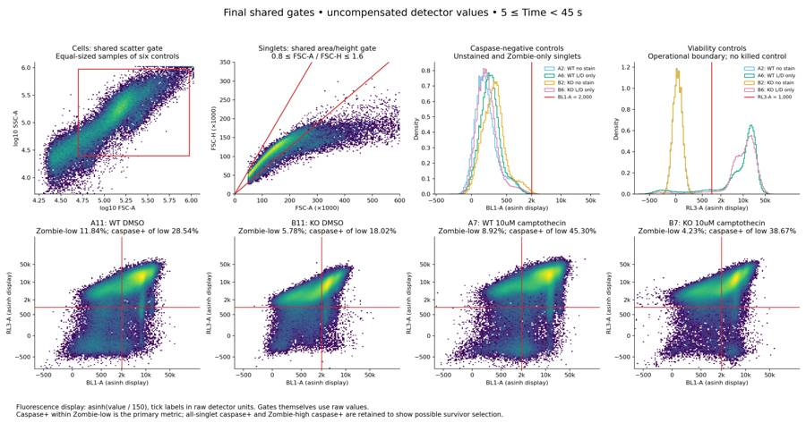
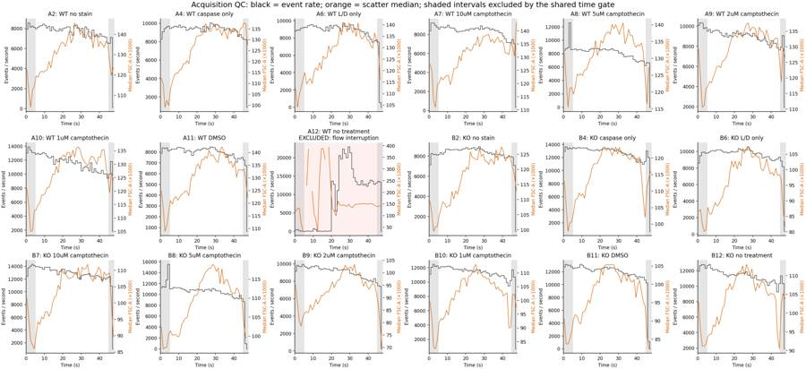
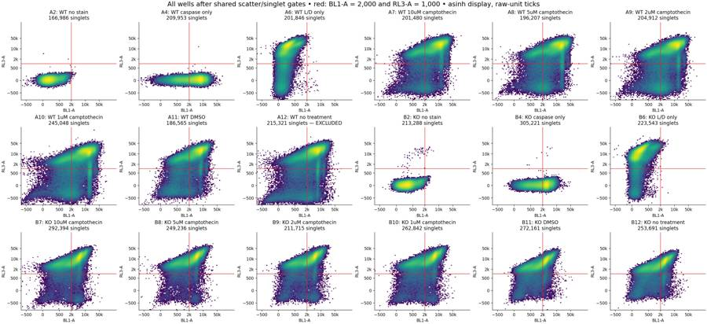
22
agent
The final DMSO result is 28.54% caspase-positive among Zombie-low WT cells versus 18.02% in KO. That direction holds across the gate-sensitivity checks, although the 10 µM genotype comparison is less robust. I recommend titrating Zombie NIR with verified live and killed controls before moving to rescue experiments. I’m now checking the output schemas and saved-gate reproducibility.
tool call · exec
text(await tools.apply_patch("*** Begin Patch\n*** Add File: /task/outputs/validate_outputs.py\n+\"\"\"Independent schema, cross-file, and saved-gate reproduction checks.\"\"\"\n+from pathlib import Path\n+import hashlib\n+import json\n+import re\n+import numpy as np\n+import pandas as pd\n+import flowkit as fk\n+from PIL import Image\n+\n+OUT=Path('/task/outputs')\n+layout=pd.read_csv('/task/inputs/plate_layout.csv')\n+schemas={\n+ 'counts.csv':['file','well','population','role','parent','count','pct_of_parent'],\n+ 'flags.csv':['file','well','issue_type','evidence','decision'],\n+ 'condition_summary.csv':['condition','wells','n_wells_used','mean','sd','metric_definition','normalisation_applied']\n+}\n+tables={}\n+for name,columns in schemas.items():\n+ text=(OUT/name).read_text(encoding='utf-8')\n+ assert text.splitlines()[0]==','.join(columns)\n+ tables[name]=pd.read_csv(OUT/name)\n+ assert tables[name].columns.tolist()==columns\n+c=tables['counts.csv']; f=tables['flags.csv']; s=tables['condition_summary.csv']\n+assert not c.duplicated(['file','population']).any()\n+assert c['count'].dtype.kind in 'iu' and (c['count']>=0).all()\n+assert set(c.file)==set(layout.file) and len(f)==len(layout)==18\n+assert not f.file.duplicated().any() and set(f.file)==set(layout.file)\n+assert set(f.issue_type)<={'none','clog','ran_dry','too_few_events','saturation','bad_control','mislabel','other'}\n+assert set(f.decision)<={'keep','keep_with_note','exclude'}\n+for r in f.itertuples():\n+ assert layout.set_index('file').loc[r.file,'well']==r.well\n+ if r.issue_type!='none': assert isinstance(r.evidence,str) and re.search(r'\\d',r.evidence)\n+assert set(c.role)<={'cells','singlets','live','marker_positive','other'}\n+gs=fk.parse_gating_xml(str(OUT/'gates.xml'))\n+ids=gs.get_gate_ids()\n+gate_names={name for name,path in ids}\n+assert gate_names==set(c.population)-{'all_events'}\n+assert all(re.fullmatch('[A-Za-z][A-Za-z0-9_]*',name) for name in gate_names)\n+expected_pops=set(c.population)\n+reproduced=0\n+for r in layout.itertuples():\n+ frame=c[c.file==r.file].set_index('population')\n+ assert set(frame.index)==expected_pops\n+ assert set(frame.well)=={r.well}\n+ ae=frame.loc['all_events']\n+ assert ae.role=='other' and ae.parent=='none' and pd.isna(ae.pct_of_parent)\n+ for role in ['cells','singlets','live','marker_positive']:\n+ assert (frame.role==role).sum()==1\n+ assert c.loc[c.role==role,'population'].nunique()==1\n+ sample=fk.Sample('/task/inputs/raw/'+r.file)\n+ result=gs.gate_sample(sample)\n+ assert sample.event_count==ae['count']\n+ for pop,path in ids:\n+ row=frame.loc[pop]\n+ assert row.parent==('all_events' if path[-1]=='root' else path[-1])\n+ assert int(result.get_gate_count(pop))==row['count'],(r.well,pop)\n+ assert np.isclose(row.pct_of_parent,100*row['count']/frame.loc[row.parent,'count'],rtol=0,atol=1e-10)\n+ reproduced+=1\n+assert s.condition.is_unique\n+assert np.isfinite(s['mean']).all() and (s.n_wells_used>=1).all()\n+assert s.loc[s.n_wells_used==1,'sd'].isna().all()\n+assert set(s.normalisation_applied)=={'none'}\n+excluded=set(f.loc[f.decision=='exclude','well'])\n+formulas={\n+ '100 * caspase_positive / live':('caspase_positive','live'),\n+ '100 * caspase_all_singlets / singlets':('caspase_all_singlets','singlets'),\n+ '100 * live / singlets':('live','singlets')\n+}\n+for r in s.itertuples():\n+ wells=r.wells.split(';')\n+ assert len(wells)==r.n_wells_used and len(set(wells))==len(wells)\n+ assert not excluded.intersection(wells)\n+ numer,denom=formulas[r.metric_definition]\n+ values=[]\n+ for well in wells:\n+ cc=c[c.well==well].set_index('population')['count']\n+ values.append(100*cc[numer]/cc[denom])\n+ assert np.isclose(np.mean(values),r.mean,rtol=0,atol=1e-10)\n+a=json.loads((OUT/'answer.json').read_text())\n+assert set(a)=={'question','comparisons','overall_answer','assay_verdict','next_action','next_change','excluded_wells','caveats'}\n+assert len(a['comparisons'])>=1\n+for comparison in a['comparisons']:\n+ assert set(comparison)=={'comparison','a','b','direction','magnitude','confidence'}\n+ assert comparison['a'] in set(s.condition) and comparison['b'] in set(s.condition)\n+ assert comparison['direction'] in ['increase','decrease','no_clear_change']\n+ assert comparison['confidence'] in ['high','medium','low']\n+ assert re.search(r'\\d',comparison['magnitude'])\n+assert a['overall_answer'].startswith(('yes:','partial:','no:'))\n+assert a['assay_verdict'] in ['fit_for_purpose','needs_optimisation','not_fit_for_purpose']\n+assert a['next_action'] in ['proceed_as_planned','repeat_unchanged','repeat_with_change','optimise_reagent_or_setting','change_treatment_or_timing','switch_assay','stop']\n+assert set(a['next_change'])=={'what','from','to','why'}\n+assert all(isinstance(v,str) for v in a['next_change'].values())\n+assert set(a['excluded_wells'])==excluded\n+headings=re.findall(r'^## .+$',(OUT/'report.md').read_text(),re.M)\n+assert headings==['## Question','## Methods','## Results','## Conclusion','## Caveats','## Recommendation']\n+with Image.open(OUT/'figure.png') as im:\n+ assert im.format=='PNG'\n+ image_size=im.size\n+required=['gates.xml','counts.csv','flags.csv','condition_summary.csv','figure.png','report.md','answer.json']\n+verification={'status':'pass','raw_files':len(layout),'populations_per_file':len(expected_pops),'count_rows':len(c),'saved_gate_counts_independently_reproduced':reproduced,'all_events_counts_independently_reproduced':18,'conditions_and_metrics':len(s),'excluded_wells':sorted(excluded),'figure_size_px':image_size,'deliverable_sha256':{name:hashlib.sha256((OUT/name).read_bytes()).hexdigest() for name in required}}\n+(OUT/'validation.json').write_text(json.dumps(verification,indent=2)+'\\n')\n+print(json.dumps(verification,indent=2))\n*** End Patch"));
text(await tools.ex
… [109 more characters not shown]tool output
Script completed
Wall time 1.2 seconds
Output:
{}
{"chunk_id":"66c2e7","wall_time_seconds":1.000676119,"session_id":99202,"original_token_count":0,"output":""}tool call · exec
const results=await Promise.allSettled([
tools.write_stdin({session_id:99202,chars:"","yield_time_ms":1000,"max_output_tokens":3000}),
tools.exec_command({cmd:"ls -lh /task/outputs && python - <<'PY'\nfrom pathlib import Path\nimport pandas as pd,json\np=Path('/task/outputs')\nprint('Required files:',all((p/n).is_file() for n in ['gates.xml','counts.csv','flags.csv','condition_summary.csv','figure.png','report.md','answer.json']))\nprint('Report words:',len((p/'report.md').read_text().split()))\nprint('Summary used wells:',sorted(pd.read_csv(p/'condition_summary.csv').wells.unique()))\nprint('JSON next action:',json.loads((p/'answer.json').read_text())['next_action'])\nPY","max_output_tokens":3000})
]);results.forEach((r,i)=>text({i,...r}));
tool output
Script completed
Wall time 0.3 seconds
Output:
{"i":0,"status":"fulfilled","value":{"chunk_id":"dcd0ba","wall_time_seconds":0.000003374,"exit_code":0,"original_token_count":239,"output":"{\n \"status\": \"pass\",\n \"raw_files\": 18,\n \"populations_per_file\": 9,\n \"count_rows\": 162,\n \"saved_gate_counts_independently_reproduced\": 144,\n \"all_events_counts_independently_reproduced\": 18,\n \"conditions_and_metrics\": 51,\n \"excluded_wells\": [\n \"A12\"\n ],\n \"figure_size_px\": [\n 3100,\n 1160\n ],\n \"deliverable_sha256\": {\n \"gates.xml\": \"4ff887a142aabb99561fc9f00509fb85bc175a0c1153c937619e8a86d442eb04\",\n \"counts.csv\": \"19ed8cb5ee35b7b932af5fa92c8abb9661662d44cfd376b087aef897c0166a2a\",\n \"flags.csv\": \"3c923f1804a6fe8ec27d07a3781fe06a081574f5b937c8715fe22115e187fa72\",\n \"condition_summary.csv\": \"57ca1d451ec82370d8157b59a2c5be6d578112782aafb6c0305780fc14732600\",\n \"figure.png\": \"0522d9af9c71d7b064ea6b78c27e2a4aa1b316d78c9c1d146d0091269271016b\",\n \"report.md\": \"dd7e37e36f6d7b9a57b51adb6520e43ab86b26591729c9bdc800b84cc228bb2f\",\n \"answer.json\": \"0b841eca2b277496e0b239ccbd8e21398a542da2ec96aaaa5b4f1654a3679358\"\n }\n}\n"}}
{"i":1,"status":"fulfilled","value":{"chunk_id":"3c8ad4","wall_time_seconds":0.140716466,"exit_code":0,"original_token_count":565,"output":"total 4.5M\n-rw-r--r-- 1 root root 2.8K Nov 10 17:10 acquisition_qc.csv\n-rw-r--r-- 1 root root 643K Nov 10 17:16 acquisition_qc.png\n-rw-r--r-- 1 root root 392K Nov 10 17:16 all_wells_gating.png\n-rw-r--r-- 1 root root 14K Nov 10 17:14 analyse_plate.py\n-rw-r--r-- 1 root root 5.7K Nov 10 17:18 answer.json\n-rw-r--r-- 1 root root 15K Nov 10 17:10 channel_quantiles.csv\n-rw-r--r-- 1 root root 5.0K Nov 10 17:14 condition_summary.csv\n-rw-r--r-- 1 root root 17K Nov 10 17:14 counts.csv\n-rw-r--r-- 1 root root 276K Nov 10 17:10 exploratory_fluorescence.png\n-rw-r--r-- 1 root root 237K Nov 10 17:10 exploratory_histograms.png\n-rw-r--r-- 1 root root 255K Nov 10 17:10 exploratory_scatter.png\n-rw-r--r-- 1 root root 210K Nov 10 17:10 exploratory_singlets.png\n-rw-r--r-- 1 root root 537K Nov 10 17:10 exploratory_time.png\n-rw-r--r-- 1 root root 377K Nov 10 17:11 explore_gated_fluorescence.png\n-rw-r--r-- 1 root root 231K Nov 10 17:11 explore_gated_histograms.png\n-rw-r--r-- 1 root root 16K Nov 10 17:11 explore_gates.csv\n-rw-r--r-- 1 root root 3.3K Nov 10 17:11 explore_gates.py\n-rw-r--r-- 1 root root 227K Nov 10 17:11 explore_linear_singlets.png\n-rw-r--r-- 1 root root 138K Nov 10 17:11 explore_width.png\n-rw-r--r-- 1 root root 56K Nov 10 17:10 fcs_metadata.json\n-rw-r--r-- 1 root root 271K Nov 10 17:14 figure.png\n-rw-r--r-- 1 root root 4.2K Nov 10 17:14 flags.csv\n-rw-r--r-- 1 root root 33K Nov 10 17:14 gate_sensitivity.csv\n-rw-r--r-- 1 root root 3.2K Nov 10 17:14 gates.xml\n-rw-r--r-- 1 root root 435K Nov 10 17:16 gating_qc.png\n-rw-r--r-- 1 root root 3.8K Nov 10 17:10 inspect_plate.py\n-rw-r--r-- 1 root root 6.2K Nov 10 17:15 plot_qc.py\n-rw-r--r-- 1 root root 14K Nov 10 17:18 report.md\n-rw-r--r-- 1 root root 7.6K Nov 10 17:14 time_binned_qc.csv\n-rw-r--r-- 1 root root 5.6K Nov 10 17:19 validate_outputs.py\n-rw-r--r-- 1 root root 953 Nov 10 17:19 validation.json\n-rw-r--r-- 1 root root 2.8K Nov 10 17:14 verification.json\n-rw-r--r-- 1 root root 8.0K Nov 10 17:14 well_metrics.csv\n-rw-r--r-- 1 root root 21K Nov 10 17:18 write_report.py\nRequired files: True\nReport words: 1987\nSummary used wells: ['A10', 'A11', 'A2', 'A4', 'A6', 'A7', 'A8', 'A9', 'B10', 'B11', 'B12', 'B2', 'B4', 'B6', 'B7', 'B8', 'B9']\nJSON next action: optimise_reagent_or_setting\n"}}24
agent
Completed all seven deliverables in `/task/outputs/`. [Report](/task/outputs/report.md) · [Figure](/task/outputs/figure.png) · [Answer JSON](/task/outputs/answer.json)
In DMSO, caspase positivity among Zombie-low cells was **28.54% WT versus 18.02% KO**. This is preliminary: biological replication is absent, Zombie-low recovery is poor, and WT untreated well **A12 was excluded** for interrupted flow.
The assay **needs optimisation**. Next, titrate Zombie NIR at **1:500, 1:1000 and 1:2000** using verified live and killed controls.
Saved gates reload successfully, and independent reapplication reproduced every reported count across all 18 files.